NIST Special Publication · PDF 原文抽出
Incident Response Recommendations and Considerations for Cybersecurity Risk Management: A CSF 2.0 Community Profile
サイバーセキュリティリスク管理におけるインシデント対応の推奨事項と考慮事項：CSF 2.0コミュニティプロファイル
NIST SP 800-61 Rev. 3（Incident Response Recommendations and Considerations for Cybersecurity Risk Management: A CSF 2.0 Community Profile）の英文と日本語訳を段落ごとに並べた閲覧用ページです。NISTサイバーセキュリティフレームワーク（CSF）2.0に沿って、インシデント対応を組織のサイバーセキュリティリスク管理全体に組み込むための推奨事項と考慮事項を示します。 翻訳は非公式です。要件の確認にはNIST の正式版 PDFを参照してください。
PDF から抽出した原文は原本との照合待ちです。
本文の数式はLaTeXの構造からKaTeXで表示しています。
NIST Special Publication 800
NIST特別刊行物800
NIST SP 800-61r3
NIST SP 800-61r3
Incident Response Recommendations and Considerations for Cybersecurity
インシデント対応に関する推奨事項と考慮事項：サイバーセキュリティ
Risk Management
リスク管理
A CSF 2.0 Community Profile
CSF 2.0コミュニティプロファイル
Alex Nelson Sanjay Rekhi Murugiah Souppaya Karen Scarfone
Alex Nelson、Sanjay Rekhi、Murugiah Souppaya、Karen Scarfone
This publication is available free of charge from: https://doi.org/10.6028/NIST.SP.800-61r3
本刊行物は、次のURLから無料で入手できる：https://doi.org/10.6028/NIST.SP.800-61r3
NIST Special Publication 800
NIST特別刊行物800
NIST SP 800-61r3
NIST SP 800-61r3
Incident Response Recommendations and Considerations for Cybersecurity
インシデント対応に関する推奨事項と考慮事項：サイバーセキュリティ
Risk Management
リスク管理
A CSF 2.0 Community Profile
CSF 2.0コミュニティプロファイル
Alex Nelson Sanjay Rekhi Murugiah Souppaya*
Alex Nelson、Sanjay Rekhi、Murugiah Souppaya*
Computer Security Division Information Technology Laboratory
コンピューターセキュリティ部門、情報技術研究所
Karen Scarfone Scarfone Cybersecurity
Karen Scarfone — Scarfone Cybersecurity
*Former NIST employee; all work for this publication was done while at NIST.
*元NIST職員。本刊行物に関するすべての作業はNIST在職中に行われた。
This publication is available free of charge from: https://doi.org/10.6028/NIST.SP.800-61r3
本刊行物は次のURLから無料で入手できる：https://doi.org/10.6028/NIST.SP.800-61r3
April 2025
2025年4月

米国商務省の公式紋章。外周には「米国商務省」「アメリカ合衆国」とあり、中央には鷲、盾、帆船が描かれている。
U.S. Department of Commerce Howard Lutnick, Secretary of Commerce
米国商務省 商務長官 Howard Lutnick
National Institute of Standards and Technology
米国国立標準技術研究所
Craig Burkhardt, Acting Under Secretary of Commerce for Standards and Technology and Acting NIST Director
Craig Burkhardt、商務省規格・技術担当次官（代理）兼NIST所長（代理）
Certain equipment, instruments, software, or materials, commercial or non-commercial, are identified in this paper in order to specify the experimental procedure adequately. Such identification does not imply recommendation or endorsement of any product or service by NIST, nor does it imply that the materials or equipment identified are necessarily the best available for the purpose.
本書では、実験手順を十分に特定するため、特定の機器、計測器、ソフトウェアまたは材料（商用・非商用を問わない）を記載することがある。こうした記載は、NISTが製品やサービスを推奨または承認することを意味せず、記載した材料や機器が目的に対して必ずしも最良であることも意味しない。
There may be references in this publication to other publications currently under development by NIST in accordance with its assigned statutory responsibilities. The information in this publication, including concepts and methodologies, may be used by federal agencies even before the completion of such companion publications. Thus, until each publication is completed, current requirements, guidelines, and procedures, where they exist, remain operative. For planning and transition purposes, federal agencies may wish to closely follow the development of these new publications by NIST.
本刊行物には、NISTが割り当てられた法的責任に基づいて現在策定中の他の刊行物への参照が含まれる場合がある。こうした関連刊行物が完成する前であっても、連邦機関は本刊行物に含まれる情報（概念や方法論を含む）を利用できる。したがって、各刊行物が完成するまでは、既存の要件、指針および手順が引き続き有効である。計画や移行のため、連邦機関はNISTによる新刊行物の策定状況を注意深く確認するとよい。
Organizations are encouraged to review all draft publications during public comment periods and provide feedback to NIST. Many NIST cybersecurity publications, other than the ones noted above, are available at https://csrc.nist.gov/publications.
組織は、公開コメント期間中にすべての草案を確認し、NISTに意見を提出することが推奨される。上記のものを除く多くのNISTサイバーセキュリティ刊行物は、https://csrc.nist.gov/publications から入手できる。
Authority This publication has been developed by NIST in accordance with its statutory responsibilities under the Federal Information Security Modernization Act (FISMA) of 2014, 44 U.S.C. § 3551 et seq., Public Law (P.L.) 113-283. NIST is responsible for developing information security standards and guidelines, including minimum requirements for federal information systems, but such standards and guidelines shall not apply to national security systems without the express approval of appropriate federal officials exercising policy authority over such systems. This guideline is consistent with the requirements of the Office of Management and Budget (OMB) Circular A-130.
権限 本刊行物は、2014年連邦情報セキュリティ近代化法（FISMA）、合衆国法典第44編第3551条以降、ならびに公法113-283に基づく法的責任に従ってNISTが作成した。NISTは、連邦情報システムの最低要件を含む情報セキュリティ標準および指針を策定する責任を負う。ただし、適切な政策権限を持つ連邦当局者の明示的な承認がない限り、これらの標準および指針は国家安全保障システムには適用されない。本指針は、行政管理予算局（OMB）通達A-130の要件に沿っている。
Nothing in this publication should be taken to contradict the standards and guidelines made mandatory and binding on federal agencies by the Secretary of Commerce under statutory authority. Nor should these guidelines be interpreted as altering or superseding the existing authorities of the Secretary of Commerce, Director of the OMB, or any other federal official. This publication may be used by nongovernmental organizations on a voluntary basis and is not subject to copyright in the United States. Attribution would, however, be appreciated by NIST.
本刊行物のいかなる記載も、法的権限に基づき商務長官が連邦機関に義務付け、拘束力を持たせた標準および指針に反するものと解釈してはならない。また、本指針を、商務長官、OMB長官、その他の連邦当局者が持つ既存の権限を変更または置き換えるものと解釈してはならない。政府機関以外の組織は任意で本刊行物を利用でき、米国内では著作権の対象ではない。ただし、NISTは出典を明記することを歓迎する。
NIST Technical Series Policies Copyright, Use, and Licensing Statements NIST Technical Series Publication Identifier Syntax
NIST技術シリーズ方針／著作権、利用およびライセンスに関する声明／NIST技術シリーズ刊行物識別子の構文
Publication History Approved by the NIST Editorial Review Board on 2025-03-25 Supersedes NIST SP 800-61r2 (August 2012) https://doi.org/10.6028/NIST.SP.800-61r2
刊行履歴 2025年3月25日にNIST編集審査委員会が承認。NIST SP 800-61r2（2012年8月）に代わる。https://doi.org/10.6028/NIST.SP.800-61r2
How to Cite this NIST Technical Series Publication Nelson A, Rekhi S, Souppaya M, Scarfone K (2025) Incident Response Recommendations and Considerations for Cybersecurity Risk Management: A CSF 2.0 Community Profile. (National Institute of Standards and Technology, Gaithersburg, MD), NIST Special Publication (SP) NIST SP 800-61r3. https://doi.org/10.6028/NIST.SP.800-61r3
NIST技術シリーズ刊行物の引用方法 Nelson A、Rekhi S、Souppaya M、Scarfone K（2025）「サイバーセキュリティリスク管理のためのインシデント対応に関する推奨事項と考慮事項：CSF 2.0コミュニティプロファイル」（米国国立標準技術研究所、メリーランド州ゲイザースバーグ）、NIST特別刊行物（SP）、NIST SP 800-61r3。https://doi.org/10.6028/NIST.SP.800-61r3
Author ORCID iDs Alex Nelson: 0000-0002-3771-570X Sanjay Rekhi: 0009-0008-8711-4030 Murugiah Souppaya: 0000-0002-8055-8527 Karen Scarfone: 0000-0001-6334-9486
著者のORCID iD Alex Nelson：0000-0002-3771-570X、Sanjay Rekhi：0009-0008-8711-4030、Murugiah Souppaya：0000-0002-8055-8527、Karen Scarfone：0000-0001-6334-9486
Contact Information 800-61-comments@nist.gov
連絡先 800-61-comments@nist.gov
National Institute of Standards and Technology Attn: Computer Security Division, Information Technology Laboratory 100 Bureau Drive (Mail Stop 8930) Gaithersburg, MD 20899-8930
米国国立標準技術研究所 宛先：コンピューターセキュリティ部門、情報技術研究所、100 Bureau Drive（Mail Stop 8930）、Gaithersburg, MD 20899-8930
Additional Information Additional information about this publication is available at https://csrc.nist.gov/pubs/sp/800/61/r3/final, including related content, potential updates, and document history.
追加情報 本刊行物に関する追加情報（関連コンテンツ、今後の更新、文書履歴を含む）は、https://csrc.nist.gov/pubs/sp/800/61/r3/final で確認できる。
All comments are subject to release under the Freedom of Information Act (FOIA).
コメントはすべて、情報自由法（FOIA）に基づく公開の対象となる。
Abstract
概要
This publication seeks to assist organizations with incorporating cybersecurity incident response recommendations and considerations throughout their cybersecurity risk management activities as described by the NIST Cybersecurity Framework (CSF) 2.0. Doing so can help organizations prepare for incident responses, reduce the number and impact of incidents that occur, and improve the efficiency and effectiveness of their incident detection, response, and recovery activities. Readers are encouraged to utilize online resources in conjunction with this document to access additional information on implementing these recommendations and considerations.
本刊行物は、NISTサイバーセキュリティフレームワーク（CSF）2.0に記載されたサイバーセキュリティリスク管理活動全体に、インシデント対応に関する推奨事項と考慮事項を組み込む際の支援を目的とする。これにより、組織はインシデント対応の準備を整え、発生するインシデントの件数と影響を低減し、検知、対応、復旧活動の効率と有効性を高められる。読者には、推奨事項と考慮事項の実装に関する追加情報を得るため、本書とオンラインリソースを併用することを推奨する。
Keywords
キーワード
cyber threat information sharing; Cybersecurity Framework; cybersecurity incident; cybersecurity risk management; incident handling; incident management; incident response.
サイバー脅威情報共有；サイバーセキュリティフレームワーク；サイバーセキュリティインシデント；サイバーセキュリティリスク管理；インシデント処理；インシデント管理；インシデント対応。
Reports on Computer Systems Technology
コンピューターシステム技術に関する報告書
The Information Technology Laboratory (ITL) at the National Institute of Standards and Technology (NIST) promotes the U.S. economy and public welfare by providing technical leadership for the Nation’s measurement and standards infrastructure. ITL develops tests, test methods, reference data, proof of concept implementations, and technical analyses to advance the development and productive use of information technology. ITL’s responsibilities include the development of management, administrative, technical, and physical standards and guidelines for the cost-effective security and privacy of other than national security-related information in federal information systems. The Special Publication 800-series reports on ITL’s research, guidelines, and outreach efforts in information system security, and its collaborative activities with industry, government, and academic organizations.
米国国立標準技術研究所（NIST）の情報技術研究所（ITL）は、米国の計量・標準インフラに対する技術的な指導力を発揮することにより、米国経済と公共の福祉を促進する。ITLは、情報技術の開発と生産的な利用を推進するため、試験、試験方法、参照データ、概念実証の実装、および技術分析を開発する。ITLの責務には、国家安全保障以外の連邦情報システムにおける情報のセキュリティとプライバシーを費用対効果の高い方法で確保するための、管理、事務手続き、技術および物理的な標準・指針の策定が含まれる。特別刊行物800シリーズは、情報システムセキュリティに関するITLの研究、指針、普及活動、および産業界、政府、学術機関との協力活動を報告する。
Supplemental Content
補足コンテンツ
NIST has established an Incident Response project page that hosts links to resources with additional information on incident response activities. By moving links from this document to a website, NIST can update and expand them as needed without having to release a new version of this publication.
NISTはインシデント対応プロジェクトページを設け、インシデント対応活動に関する追加情報を含むリソースへのリンクを掲載している。本書からリンクをウェブサイトへ移すことで、NISTは本刊行物の新版を発行せずに、必要に応じてリンクを更新・拡充できる。
For more information on CSF 2.0 Community Profiles, see the Framework Resource Center.
CSF 2.0 Community Profileの詳細については、Framework Resource Centerを参照。
Audience
対象読者
The target audience for this publication includes cybersecurity program leadership, cybersecurity personnel, and others who are responsible for preparing for, detecting, responding to, or recovering from cybersecurity incidents. This publication is intended for use by most organizations, regardless of sector, size, or other factors.
本刊行物の対象読者は、サイバーセキュリティプログラムの責任者、サイバーセキュリティ担当者、およびサイバーセキュリティインシデントへの備え、検知、対応、復旧に責任を負うその他の人々である。本刊行物は、業種、規模その他の要因にかかわらず、ほとんどの組織で利用することを想定している。
Trademark Information
商標に関する情報
All registered trademarks belong to their respective organizations.
登録商標はそれぞれの組織に帰属する。
Patent Disclosure Notice
特許開示に関する通知
NOTICE: ITL has requested that holders of patent claims whose use may be required for compliance with the guidance or requirements of this publication disclose such patent claims to ITL. However, holders of patents are not obligated to respond to ITL calls for patents and ITL has not undertaken a patent search in order to identify which, if any, patents may apply to this publication.
通知：ITLは、本刊行物の指針または要件に準拠するために使用が必要となる可能性のある特許請求について、その保有者にITLへの開示を求めている。ただし、特許保有者にはITLからの開示要請に応じる義務はなく、ITLは本刊行物に適用される可能性のある特許の有無を特定するための特許調査を実施していない。
As of the date of publication and following call(s) for the identification of patent claims whose use may be required for compliance with the guidance or requirements of this publication, no such patent claims have been identified to ITL.
刊行日時点で、本刊行物の指針または要件に準拠するために使用が必要となる可能性のある特許請求の特定を要請した結果、ITLに開示された該当特許請求はない。
No representation is made or implied by ITL that licenses are not required to avoid patent infringement in the use of this publication.
本刊行物の利用において特許侵害を避けるためのライセンスが不要であることを、ITLが明示または黙示に表明するものではない。
Table of Contents
目次
Executive Summary — 1
概要 — 1
1. Introduction — 2
1. 序論 — 2
1.1. Purpose and Scope — 3
1.1. 目的と適用範囲 — 3
1.2. Document Structure — 3
1.2. 文書の構成 — 3
2. Incident Response as Part of Cybersecurity Risk Management — 4
2. サイバーセキュリティリスク管理の一環としてのインシデント対応 — 4
2.1. Incident Response Life Cycle Model — 4
2.1. インシデント対応ライフサイクルモデル — 4
2.2. Incident Response Roles and Responsibilities — 6
2.2. インシデント対応の役割と責任 — 6
2.3. Incident Response Policies, Processes, and Procedures — 8
2.3. インシデント対応の方針、プロセス、手順 — 8
3. CSF 2.0 Community Profile for Cyber Incident Risk Management — 10
3. サイバーインシデントリスク管理のためのCSF 2.0 Community Profile — 10
3.1. Preparation and Lessons Learned — 11
3.1. 準備と教訓 — 11
3.2. Incident Response — 23
3.2. インシデント対応 — 23
References — 36
参考文献 — 36
Appendix A. List of Symbols, Abbreviations, and Acronyms — 38
付録A. 記号、略語および頭字語の一覧 — 38
Appendix B. Glossary — 39
付録B. 用語集 — 39
Appendix C. Change Log — 40
付録C. 変更履歴 — 40
List of Tables
表一覧
Table 1. Previous incident response life cycle model’s phases and corresponding CSF 2.0 Functions — 6
表1. 旧インシデント対応ライフサイクルモデルのフェーズと、それに対応するCSF 2.0の機能 — 6
Table 2. CSF 2.0 Community Profile part 1: Preparation and Lessons Learned — 11
表2. CSF 2.0 Community Profile 第1部：準備および教訓 — 11
Table 3. CSF 2.0 Community Profile part 2: Incident Response — 23
表3. CSF 2.0 Community Profile 第2部：インシデント対応 — 23
List of Figures
図一覧
Fig. 1. Previous incident response life cycle model — 4
図1. 旧インシデント対応ライフサイクルモデル — 4
Fig. 2. Incident response life cycle model based on CSF 2.0 Functions — 5
図2. CSF 2.0の機能に基づくインシデント対応ライフサイクルモデル — 5
Executive Summary
概要
Incident response is a critical part of cybersecurity risk management and should be integrated across organizational operations. All six NIST Cybersecurity Framework (CSF) 2.0 Functions play vital roles in incident response:
インシデント対応はサイバーセキュリティリスク管理の重要な一部であり、組織運営全体に統合すべきである。NISTサイバーセキュリティフレームワーク（CSF）2.0の6つの機能は、いずれもインシデント対応で重要な役割を果たす。
•Govern, Identify, and Protect help organizations prevent some incidents, prepare to handle incidents that do occur, reduce the impact of those incidents, and improve incident response and cybersecurity risk management practices based on lessons learned from those incidents.
•Govern（統治）、Identify（特定）、Protect（防御）は、組織が一部のインシデントを防止し、発生したインシデントへの対処を準備し、インシデントの影響を軽減し、またインシデントから得た教訓に基づいてインシデント対応とサイバーセキュリティリスク管理の実践を改善するのに役立つ。
•Detect, Respond, and Recover help organizations discover, manage, prioritize, contain, eradicate, and recover from cybersecurity incidents, as well as perform incident reporting, notification, and other incident-related communications.
•Detect（検知）、Respond（対応）、Recover（復旧）は、組織がサイバーセキュリティインシデントを発見、管理、優先順位付け、封じ込め、根絶、復旧するのに役立つ。また、インシデントの報告、通知、その他インシデント関連の連絡も支援する。
Many individuals, teams, and third parties hold a wide variety of roles and responsibilities across all of the Functions that support an organization’s incident response. Organizations have no direct control over the tactics and techniques used by their adversaries, nor are they certain about the timing of a future incident other than knowing that another incident is inevitable. However, organizations can use an incident response life cycle framework or model that best suits them to develop strong cybersecurity risk management practices that reduce their risks to acceptable levels.
組織のインシデント対応を支える各機能には、多様な役割と責任があり、多くの個人、チーム、第三者が関与する。組織は攻撃者の戦術や手法を直接制御できず、将来のインシデントがいつ起きるかも、別のインシデントがいずれ起きるということ以外は予測できない。しかし、組織に最適なインシデント対応ライフサイクルの枠組みまたはモデルを用い、リスクを許容可能な水準に抑える強固なサイバーセキュリティリスク管理を構築できる。
This publication uses the CSF 2.0 Functions, Categories, and Subcategories to organize its recommendations, considerations, and other information regarding incident response as a CSF 2.0 Community Profile. Doing so provides a common taxonomy that is already widely used for communicating about incident response and cybersecurity risk management and governance. This also enables organizations to access a range of online resources mapped to each Function, Category, and Subcategory through the NIST Cybersecurity and Privacy Reference Tool (CPRT). These resources include mappings to other incident response and cybersecurity risk management standards and guidance, as well as sources of implementation guidance that organizations can choose to utilize as needed.
本刊行物は、インシデント対応に関する推奨事項、考慮事項、その他の情報をCSF 2.0 Community Profileとして整理するため、CSF 2.0の機能、カテゴリー、サブカテゴリーを使用する。これにより、インシデント対応、サイバーセキュリティリスク管理、ガバナンスについて伝達する際に広く用いられている共通の分類体系を提供する。また、NIST Cybersecurity and Privacy Reference Tool（CPRT）を通じて、各機能、カテゴリー、サブカテゴリーに対応付けられた幅広いオンラインリソースを組織が利用できる。これらには、インシデント対応とサイバーセキュリティリスク管理に関する他の標準・指針との対応関係や、組織が必要に応じて選択できる実装ガイダンスが含まれる。
Organizations should use the incident response life cycle framework or model that suits them best. The model in this document is based on CSF 2.0 to take advantage of the wealth of resources available for CSF 2.0 and aid organizations that are already using the CSF. Regardless of the incident response life cycle framework or model used, every organization should take incident response into consideration throughout their cybersecurity risk management activities.
組織は、自らに最も適したインシデント対応ライフサイクルの枠組みまたはモデルを採用すべきである。本書のモデルはCSF 2.0に基づいており、CSF 2.0で利用できる豊富なリソースを活用するとともに、すでにCSFを使用している組織を支援する。どの枠組みまたはモデルを使う場合でも、すべての組織はサイバーセキュリティリスク管理活動全体を通じてインシデント対応を考慮すべきである。
1. Introduction
1. 序論
Within this document, an event is any observable occurrence that involves computing assets, including physical and virtual platforms, networks, services, and cloud environments. Examples of events are user login attempts, the installation of software updates, and an application responding to a transaction request. Many events focus on security or have security implications. Adverse events are any events associated with a negative consequence regardless of cause, including natural disasters, power failures, or cybersecurity attacks. This guide addresses only adverse cybersecurity events. Additional analysis is often needed to determine whether adverse cybersecurity events indicate that a cybersecurity incident has occurred.
本書では、イベントとは、物理・仮想プラットフォーム、ネットワーク、サービス、クラウド環境を含むコンピューティング資産に関して観測可能なあらゆる事象をいう。例として、ユーザーのログイン試行、ソフトウェア更新のインストール、トランザクション要求に対するアプリケーションの応答がある。多くのイベントはセキュリティに関係するか、セキュリティ上の影響を持つ。有害事象とは、自然災害、停電、サイバー攻撃など、原因を問わず負の結果を伴うイベントである。本ガイドが扱うのは有害なサイバーセキュリティ事象に限る。有害事象がサイバーセキュリティインシデントの発生を示すかどうかを判断するには、さらに分析が必要な場合が多い。
A cybersecurity incident (or simply incident) is
サイバーセキュリティインシデント（単に「インシデント」ともいう）とは、
…an occurrence that actually or imminently jeopardizes, without lawful authority, the integrity, confidentiality, or availability of information or an information system; or constitutes a violation or imminent threat of violation of law, security policies, security procedures, or acceptable use policies. [FISMA2014]
原本PDFの抜粋画像
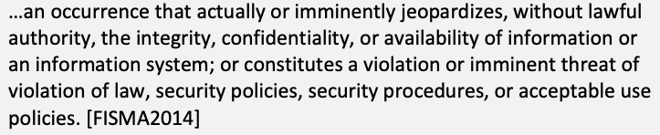
…適法な権限なしに、情報または情報システムの完全性、機密性もしくは可用性を実際に、または差し迫って危険にさらす事象、あるいは法律、セキュリティ方針、セキュリティ手順、許容される利用方針への違反または違反の差し迫った脅威を構成する事象をいう。［FISMA2014］
Examples of incidents include an attacker:
インシデントの例として、攻撃者が次の行為を行う場合がある：
•Employing a botnet to send high volumes of connection requests to an internet-facing service, making it unavailable to legitimate service users
•ボットネットを使ってインターネットに公開されたサービスに大量の接続要求を送り、正規の利用者がサービスを利用できなくする。
•Obtaining administrative credentials at a software-as-a-service provider, which puts sensitive tenant data entrusted to that provider at risk
•Software-as-a-Service（SaaS）プロバイダーの管理者認証情報を取得し、そのプロバイダーに預けられたテナントの機密データを危険にさらす。
•Intruding upon an organization’s business network to steal credentials and use them to instruct industrial control systems to shut down or destroy critical physical components, causing a major service disruption
•組織の業務ネットワークへ侵入して認証情報を盗み、それを使って産業制御システムに指示を送り、重要な物理コンポーネントを停止または破壊して大規模なサービス中断を引き起こす。
•Deploying ransomware to prevent the use of computer systems and cause multiple data breaches by copying files from those systems
•ランサムウェアを展開してコンピューターシステムを利用できなくし、システムからファイルをコピーして複数のデータ侵害を引き起こす。
•Using phishing emails to compromise user accounts and using those accounts to commit financial fraud
•フィッシングメールでユーザーアカウントを侵害し、そのアカウントを使って金融詐欺を行う。
•Identifying a new vulnerability in network management appliances and exploiting the vulnerability to gain unauthorized access to network communications
•ネットワーク管理アプライアンスに新たな脆弱性を見つけて悪用し、ネットワーク通信へ不正アクセスする。
•Compromising a vendor’s software, which is subsequently distributed to customers in its compromised state
•ベンダーのソフトウェアを侵害し、その侵害された状態のまま顧客に配布する。
Because of the damage that cybersecurity incidents can inflict on organizations and their customers, business partners, and others, it is vital to respond quickly and effectively when an incident occurs. Effective implementation of incident response processes enables systematic responses to and recovery from incidents by analyzing information and taking appropriate action. This reduces cybersecurity and enterprise risks by minimizing data loss or theft, the disruption of services, and the overall impact of incidents. Lessons learned from incident response activities and root cause analysis help improve cybersecurity risk management and governance efforts and ensure that the organization is better prepared to identify its current technology assets and cybersecurity risks, protect its assets, and detect, respond to, and recover from future incidents.
サイバーセキュリティインシデントは、組織とその顧客、取引先などに損害を与える可能性があるため、発生時には迅速かつ効果的に対応することが不可欠である。インシデント対応プロセスを効果的に実施すれば、情報を分析して適切な措置を講じ、インシデントへの対応と復旧を体系的に進められる。これにより、データの損失・窃取、サービスの中断、インシデント全体の影響を最小限に抑え、サイバーセキュリティリスクと事業リスクを低減できる。インシデント対応活動と根本原因分析から得た教訓は、サイバーセキュリティリスク管理とガバナンスの改善に役立ち、組織が現在の技術資産とサイバーセキュリティリスクを特定し、資産を保護し、将来のインシデントを検知、対応、復旧するための備えをより十分に整えられるようにする。
1.1. Purpose and Scope
1.1. 目的と適用範囲
This publication seeks to help organizations incorporate cybersecurity incident response recommendations and considerations throughout their cybersecurity risk management activities. It also provides a common language that all organizations can use to communicate internally and externally regarding their incident response plans and activities.
本刊行物は、組織がサイバーセキュリティリスク管理活動全体にサイバーセキュリティインシデント対応の推奨事項と考慮事項を組み込めるよう支援する。また、組織がインシデント対応計画と活動について、内外の関係者と意思疎通する際に共通して使える言葉を提供する。
The scope of this publication differs significantly from previous versions. Because the details of how to perform incident response activities change so often and vary so much across technologies, environments, and organizations, it is no longer feasible to capture and maintain that information in a single static publication. Instead, this version focuses on improving cybersecurity risk management for all of the NIST Cybersecurity Framework (CSF) 2.0 Functions [CSF2.0] to better support an organization’s incident response capabilities.
本刊行物の適用範囲は以前の版から大きく変わった。インシデント対応活動の実施方法の詳細は頻繁に変化し、技術、環境、組織によって大きく異なるため、それらの情報を単一の静的な刊行物にまとめて維持することはもはや現実的でない。そこで本版は、NISTサイバーセキュリティフレームワーク（CSF）2.0のすべての機能［CSF2.0］におけるサイバーセキュリティリスク管理の改善に焦点を当て、組織のインシデント対応能力をよりよく支援する。
Readers are encouraged to utilize other NIST resources in conjunction with this document, including the CSF 2.0 publication and supplemental resources, the Incident Response project page, and mappings to additional sources of information on implementing incident response considerations available through the NIST Cybersecurity and Privacy Reference Tool (CPRT). An example of a CPRT mapping is associating CSF 2.0 outcomes with NIST Special Publication (SP) 800-53 controls that can be implemented to help achieve the outcomes. In this way, CSF 2.0 provides a common language that facilitates access to a large number of other resources.
読者は、本書に加えて他のNISTリソースも利用することが望ましい。これには、CSF 2.0刊行物と補足リソース、Incident Responseプロジェクトページ、NIST Cybersecurity and Privacy Reference Tool（CPRT）を通じて利用できる、インシデント対応に関する考慮事項の実装情報を提供する追加情報源との対応表が含まれる。CPRTの対応付けの例として、CSF 2.0の成果と、成果の達成に利用できるNIST特別刊行物（SP）800-53の管理策との関連付けがある。このように、CSF 2.0は多数の他のリソースへアクセスするための共通言語を提供する。
This publication supersedes SP 800-61r2 (Revision 2), Computer Security Incident Handling Guide [SP800-61r2].
本刊行物は、SP 800-61r2（第2版）「コンピューターセキュリティインシデント対応ガイド」［SP800-61r2］に取って代わる。
1.2. Document Structure
1.2. 文書の構成
The remainder of this document is organized into the following sections and appendices:
本書の残りは、次の各節および付録で構成される：
•Section 2 discusses how incident response has evolved to become a critical part of cybersecurity risk management, as well as how the concept of the incident response life cycle has changed to reflect that.
•第2節では、インシデント対応がサイバーセキュリティリスク管理の重要な一部へと発展した経緯と、それに伴うインシデント対応ライフサイクルの概念の変化を説明する。
•Section 3 presents incident response recommendations and considerations for an organization’s cybersecurity risk management practices. They are organized and documented as a CSF 2.0 Community Profile.
•第3節では、組織のサイバーセキュリティリスク管理の実践に関するインシデント対応の推奨事項と考慮事項を提示する。これらはCSF 2.0 Community Profileとして整理・記録されている。
•The References section lists references cited throughout this publication.
•参考文献には、本刊行物全体で引用した文献を記載する。
•Appendix A and Appendix B provide an acronyms list and a glossary, respectively.
•付録Aと付録Bには、それぞれ略語一覧と用語集を掲載する。
•Appendix C contains a change log of the major changes made since the previous revision.
•付録Cには、前版以降に行った主な変更の履歴を掲載する。
2. Incident Response as Part of Cybersecurity Risk Management
2. サイバーセキュリティリスク管理の一環としてのインシデント対応
This section explains the fundamental concepts of incident response as an integral part of cybersecurity risk management. Section 2.1 explores the incident response life cycle and proposes a new life cycle model based on CSF 2.0 Functions. Section 2.2 discusses incident response roles and responsibilities both inside and outside an organization. Finally, Section 2.3 briefly examines incident response policies, processes, and procedures.
本節では、サイバーセキュリティリスク管理に不可欠な要素としてのインシデント対応の基本概念を説明する。第2.1節ではインシデント対応ライフサイクルを検討し、CSF 2.0の機能に基づく新たなライフサイクルモデルを提案する。第2.2節では組織内外のインシデント対応に関する役割と責任を論じる。最後に、第2.3節ではインシデント対応の方針、プロセス、手順を簡潔に検討する。
2.1. Incident Response Life Cycle Model
2.1. インシデント対応ライフサイクルモデル
Fig. 1 depicts the incident response life cycle model illustrated in the previous version of this publication [SP800-61r2].
図1に、本刊行物の旧版［SP800-61r2］に示されたインシデント対応ライフサイクルモデルを示す。
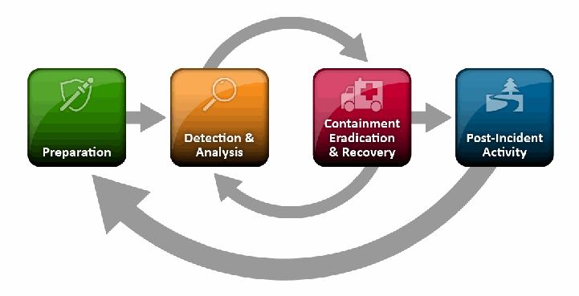
インシデント対応ライフサイクルの図。左から「準備」→「検知と分析」→「封じ込め・根絶・復旧」→「インシデント後の活動」。灰色の矢印は段階間の流れと、準備・検知・対応段階への反復的なフィードバックを示す。
Fig. 1. Previous incident response life cycle model
図1. 旧インシデント対応ライフサイクルモデル
At that time, incidents were relatively rare, the scope of most incidents was narrow and well-defined, and incident response and recovery was usually completed within a day or two. Under those conditions, it was realistic to treat incident response as a separate set of activities performed by a separate team of personnel and to depict all incident response activities as part of a circular life cycle. Formal post-incident activities would identify needed improvements and feed them into the preparation stage, thus starting the cycle again. Incident response activities were typically intermittent rather than continuous.
当時、インシデントは比較的まれで、多くのインシデントの範囲は狭く明確に定義され、対応と復旧は通常1～2日で完了していた。そのような状況では、インシデント対応を別チームが実施する独立した一連の活動として扱い、すべての活動を循環型ライフサイクルの一部として示すことが現実的だった。正式な事後活動で必要な改善点を特定し、それらを準備段階に反映してサイクルを再開していた。インシデント対応活動は、継続的というより断続的に行われるのが一般的だった。
However, the current state of incident response has greatly changed since then. Today, incidents occur frequently and cause far more damage. Recovering from them often takes weeks or months due to their breadth, complexity, and dynamic nature. Incident response is now considered a critical part of cybersecurity risk management that should be integrated across organizational operations. The lessons learned during incident response should often be shared as soon as they are identified, not delayed until after recovery concludes. Continuous improvement is increasingly necessary for all facets of cybersecurity risk management in order to keep up with modern threats.
しかし、それ以降、インシデント対応を取り巻く状況は大きく変わった。現在、インシデントは頻繁に発生し、はるかに大きな損害をもたらす。範囲の広さ、複雑さ、変化の速さから、復旧に数週間から数か月を要することも多い。インシデント対応は今やサイバーセキュリティリスク管理の重要な一部とみなされ、組織運営全体に統合すべきである。インシデント対応で得た教訓は、復旧の完了後まで待つのではなく、特定でき次第共有することがしばしば望ましい。現代の脅威に追いつくため、サイバーセキュリティリスク管理のあらゆる側面で継続的改善の必要性が高まっている。
Fig. 2 shows a high-level incident response life cycle model based on the six CSF 2.0 Functions, which organize cybersecurity outcomes at their highest level:
図2は、サイバーセキュリティ上の成果を最上位で整理するCSF 2.0の6機能に基づく、概要レベルのインシデント対応ライフサイクルモデルを示す：
•Govern (GV): The organization’s cybersecurity risk management strategy, expectations, and policy are established, communicated, and monitored.
•Govern（統治、GV）：組織のサイバーセキュリティリスク管理戦略、期待事項、方針を確立し、伝達し、監視する。
•Identify (ID): The organization’s current cybersecurity risks are understood.
•Identify（特定、ID）：組織が現在直面するサイバーセキュリティリスクを把握する。
•Protect (PR): Safeguards to manage the organization’s cybersecurity risks are used.
•Protect（防御、PR）：組織のサイバーセキュリティリスクを管理するための保護措置を使用する。
•Detect (DE): Possible cybersecurity attacks and compromises are found and analyzed.
•Detect（検知、DE）：サイバーセキュリティ攻撃や侵害の可能性を発見し、分析する。
•Respond (RS): Actions regarding a detected cybersecurity incident are taken.
•Respond（対応、RS）：検知されたサイバーセキュリティインシデントに対する措置を講じる。
•Recover (RC): Assets and operations affected by a cybersecurity incident are restored.
•Recover（復旧、RC）：サイバーセキュリティインシデントの影響を受けた資産と業務を復旧する。
All six Functions have vital roles in incident response. Govern, Identify, and Protect help organizations prevent some incidents, prepare to handle incidents that do occur, reduce the impact of those incidents, and improve incident response and cybersecurity risk management practices based on lessons learned. Detect, Respond, and Recover help organizations discover, manage, prioritize, contain, eradicate, and recover from cybersecurity incidents, as well as perform incident reporting, notification, and other incident-related communications.
6機能すべてがインシデント対応で重要な役割を担う。Govern、Identify、Protectは、組織が一部のインシデントを防止し、発生したインシデントに対処する準備を整え、その影響を低減し、教訓に基づいてインシデント対応とサイバーセキュリティリスク管理の実践を改善するのに役立つ。Detect、Respond、Recoverは、組織がインシデントを発見、管理、優先順位付け、封じ込め、根絶、復旧するほか、インシデント報告、通知、その他関連する連絡を行うのに役立つ。
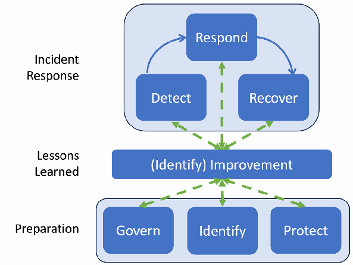
CSF 2.0によるインシデント対応の概念図。上部の「インシデント対応」枠内に「検知」「対応」「復旧」を配置し、中央の「教訓（特定）・改善」を介して、下部の準備（「統治」「特定」「防御」）へフィードバックする。青い矢印は検知から対応、復旧への流れ、緑の破線矢印は改善活動から機能群へのフィードバックを示す。
Fig. 2. Incident response life cycle model based on CSF 2.0 Functions
図2. CSF 2.0の機能に基づくインシデント対応ライフサイクルモデル
The bottom level reflects that the preparation activities of Govern, Identify, and Protect are not part of the incident response itself. Rather, they are much broader cybersecurity risk management activities that also support incident response. Incident response is shown in the top level of the figure: Detect, Respond, and Recover. Additionally, the need for continuous improvement is indicated as the middle level with the Improvement Category (ID.IM) within the Identify Function and the dashed green lines. Lessons learned from performing all activities in all Functions are fed into Improvement, and those lessons are analyzed, prioritized, and used to inform all of the Functions. This reflects that organizations can learn new lessons at all times (e.g., detecting the presence of a new threat and characterizing its behavior) and communicate those lessons to the appropriate personnel so that the organization’s incident response and other cybersecurity risk management policies, processes, and practices can be adjusted as needed.
図の最下段は、Govern、Identify、Protectの準備活動がインシデント対応そのものには含まれないことを示す。これらは、インシデント対応も支援する、より広範なサイバーセキュリティリスク管理活動である。インシデント対応は図の最上段に示すDetect、Respond、Recoverである。さらに、Identify機能内のImprovementカテゴリー（ID.IM）と緑の破線を中段に示し、継続的改善の必要性を表す。すべての機能の活動から得た教訓をImprovementへ集約し、分析、優先順位付けしたうえで、各機能に反映する。これは、組織が常に新たな教訓（例えば、新たな脅威の存在を検知し、その振る舞いを特徴付けること）を得て、その教訓を適切な担当者に伝え、組織のインシデント対応その他のサイバーセキュリティリスク管理に関する方針、プロセス、実践を必要に応じて調整できることを示している。
Table 1 maps the previous SP 800-61 incident response life cycle model’s phases to the corresponding CSF 2.0 Functions used in this document.
表1は、旧SP 800-61のインシデント対応ライフサイクルモデルのフェーズを、本書で用いる対応するCSF 2.0の機能に対応付ける。
Table 1. Previous incident response life cycle model’s phases and corresponding CSF 2.0 Functions
表1. 旧インシデント対応ライフサイクルモデルのフェーズと対応するCSF 2.0の機能
| Previous Incident Response Life Cycle Model Phase | CSF 2.0 Functions |
| Preparation | Govern |
| Identify (all Categories) | |
| Protect | |
| Detection & Analysis | Detect |
| Identify (Improvement Category) | |
| Containment, Eradication & Recovery | Respond |
| Recover | |
| Identify (Improvement Category) | |
| Post-Incident Activity | Identify (Improvement Category) |
原本PDFの抜粋画像
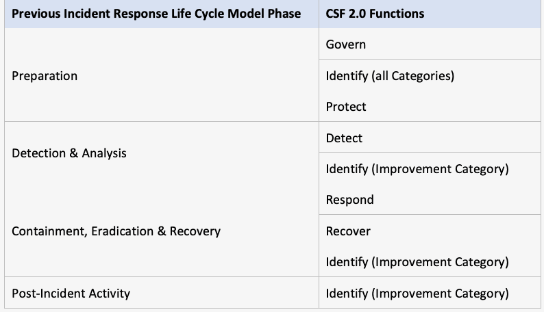
| 旧インシデント対応ライフサイクルモデルのフェーズ | CSF 2.0の機能 |
| 準備 | Govern（統治） |
| Identify（特定、全カテゴリー） | |
| Protect（防御） | |
| 検知・分析 | Detect（検知） |
| Identify（特定、改善カテゴリー） | |
| 封じ込め・根絶・復旧 | Respond（対応） |
| Recover（復旧） | |
| Identify（特定、改善カテゴリー） | |
| インシデント後の活動 | Identify（特定、改善カテゴリー） |
Organizations should use the incident response life cycle framework or model that suits them best. The model in this document is based on CSF 2.0 to take advantage of the wealth of resources available for CSF 2.0 and aid organizations that are already using the CSF. The appropriate incident response life cycle framework or model for an organization depends on many factors; for example, larger and more technology-dependent organizations are likely to benefit more from using a framework or model emphasizing continuous improvement than other organizations would. Regardless of the incident response life cycle framework or model used, every organization should take incident response into consideration throughout their cybersecurity risk management activities.
組織は、自らに最も適したインシデント対応ライフサイクルの枠組みまたはモデルを用いるべきである。本書のモデルはCSF 2.0で利用できる豊富なリソースを活用し、すでにCSFを使用している組織を支援するため、CSF 2.0に基づいている。組織に適切な枠組みまたはモデルは多くの要因によって異なる。例えば、規模が大きく技術への依存度が高い組織は、継続的改善を重視する枠組みまたはモデルを使うことで、他の組織より大きな便益を得られる可能性が高い。どの枠組みまたはモデルを使う場合でも、すべての組織はサイバーセキュリティリスク管理活動全体を通じてインシデント対応を考慮すべきである。
2.2. Incident Response Roles and Responsibilities
2.2. インシデント対応の役割と責任
In the past, incident response activities were performed almost exclusively by incident handlers from the organization’s own incident response team. Today, while incident handlers are still critically important, most organizations increasingly recognize that the success of their incident response efforts depend on the participation of many internal and external parties who hold a wide variety of roles and responsibilities and may be spread around the world. Roles and responsibilities will differ for each organization and may also differ within an organization based on the nature of a particular incident.
以前は、インシデント対応活動のほぼすべてを、組織内のインシデント対応チームに所属する対応担当者が行っていた。現在も対応担当者は極めて重要だが、大半の組織は、幅広い役割と責任を持ち、世界各地に分散している場合もある多数の内部および外部の関係者が参加することが、インシデント対応の成否を左右すると、ますます認識するようになっている。役割と責任は組織ごとに異なり、特定のインシデントの性質に応じて、同じ組織内でも異なる場合がある。
Examples of incident response roles and responsibilities include the following:
インシデント対応における役割と責任の例を次に示す。
•Leadership. The organization’s leadership team oversees incident response, allocates funding, and may have decision-making authority on high-impact response actions, such as shutting down or rebuilding critical services.
•経営幹部。組織の経営幹部はインシデント対応を監督し、予算を割り当てる。また、重要サービスの停止や再構築など、影響の大きい対応措置について意思決定権を持つ場合がある。
•Incident handlers. Incident handlers verify that an incident has occurred, collect and analyze data and evidence, prioritize incident response activities, and act appropriately to limit damage, find root causes, and restore operations. Incident handlers also often provide input to others on mitigating cybersecurity issues and improving resiliency. An organization’s incident handlers might be:
•インシデント対応担当者。インシデント対応担当者は、インシデントが発生したことを確認し、データと証拠を収集・分析し、対応活動の優先順位を決め、損害の抑制、根本原因の特定、業務の復旧に向けて適切に行動する。また、サイバーセキュリティ上の問題の緩和やレジリエンス向上について、他者に助言することも多い。組織の対応担当者には、次の形態がある：
On staff (e.g., an incident response team), o On contract (e.g., outsourcing a security operations center [SOC] to a managed o security services provider [MSSP] or leveraging a cloud service provider’s incident response team when an incident occurs within that provider’s cloud), and/or
組織内の職員（例：インシデント対応チーム）；契約要員（例：セキュリティオペレーションセンター［SOC］をマネージドセキュリティサービスプロバイダー［MSSP］へ委託する、またはクラウドサービスプロバイダーのクラウド内でインシデントが起きたときに当該プロバイダーの対応チームを利用する）；および／または
Available when needed (e.g., from a parent organization, a cybersecurity services o provider, a business partner, or a law enforcement agency).
必要に応じて対応する要員（例：親組織、サイバーセキュリティサービスプロバイダー、取引先、法執行機関からの支援）。
Many organizations may use more than one of these approaches, such as internally performing basic incident response and engaging third-party resources for assistance with certain incidents. Larger organizations may have multiple incident response teams, with each team responsible for a particular logical or physical segment of the organization. When this model is employed, the teams should be part of a single coordinated entity (e.g., a federation) to ensure that incident response processes, procedures, and training are consistent across the organization and that information is shared among teams.
多くの組織は、基本的なインシデント対応は内部で行い、特定のインシデントについて第三者の支援を受けるなど、これらの方法を複数組み合わせる場合がある。大規模な組織では、論理的または物理的な特定領域をそれぞれ担当する複数のインシデント対応チームを設ける場合がある。この体制では、組織全体でプロセス、手順、訓練の一貫性を保ち、チーム間で情報を共有するため、各チームを単一の調整された組織体（例：連合体）の一部とすべきである。
•Technology professionals. Cybersecurity, privacy, system, network, cloud, and other technology architects, engineers, and administrators, as well as software developers, may be involved in incident response and recovery efforts.
•技術担当者。サイバーセキュリティ、プライバシー、システム、ネットワーク、クラウドなどのアーキテクト、エンジニア、管理者に加え、ソフトウェア開発者もインシデント対応や復旧に関与することがある。
•Legal. Legal experts can review incident response plans, policies, and procedures to ensure compliance with applicable laws and regulations, including the right to privacy. Legal experts can also review contracts with technology suppliers and other third parties when there are incident response implications. In addition, incident responders can seek guidance from their organization’s legal department if a particular incident may have legal ramifications, such as the prosecution of a suspect, lawsuits, or situations that require a memorandum of understanding (MOU) or other binding agreement.
•法務。法務の専門家は、プライバシー権を含む適用法令への準拠を確保するため、インシデント対応計画、方針、手順を確認できる。また、インシデント対応に影響する場合、技術サプライヤーやその他の第三者との契約も確認できる。さらに、容疑者の訴追、訴訟、覚書（MOU）その他の拘束力を持つ合意が必要な状況など、特定のインシデントが法的影響を伴う可能性がある場合、対応担当者は組織の法務部門に助言を求められる。
•Public affairs and media relations. Depending on the nature and impact of an incident, it may be necessary to inform the media and, by extension, the public. Sometimes, the media learns of incidents through alternate sources (i.e., not through public affairs personnel). Having a media engagement strategy in place can greatly aid in this situation.
•広報・メディア対応。インシデントの性質や影響によっては、メディア、ひいては一般市民に知らせる必要がある。メディアが広報担当者以外の情報源からインシデントを知ることもある。このような場合、メディア対応戦略をあらかじめ整備しておくと大いに役立つ。
•Human resources. Certain human resources practices should consider cybersecurity risk management, including pre-employment screening and employee onboarding, offboarding, and position changes. Human resources may also be involved if an employee is suspected of intentionally causing an incident.
•人事。採用前審査、従業員の入職・退職・配置転換など、一部の人事慣行ではサイバーセキュリティリスク管理を考慮すべきである。従業員が意図的にインシデントを引き起こした疑いがある場合も、人事部門が関与することがある。
•Physical security and facilities management. Some computer security incidents occur through physical security breaches or involve coordinated logical and physical attacks. The incident response team may also need access to facilities during incident handling (e.g., to access a compromised workstation in a locked office).
•物理セキュリティ・施設管理。物理セキュリティ侵害によって発生するコンピューターセキュリティインシデントや、論理攻撃と物理攻撃を組み合わせたインシデントもある。対応担当者は、対応中に施設へ立ち入る必要が生じる場合もある（例：施錠された部屋にある侵害済みワークステーションへのアクセス）。
•Asset owners. Asset owners (e.g., system owners, data owners, and business process owners) may have valuable insights on response and recovery priorities for their affected assets. They also need to be kept up to date on the status of response and recovery efforts.
•資産所有者。資産所有者（例：システム所有者、データ所有者、業務プロセス所有者）は、影響を受けた資産に関する対応・復旧の優先順位について重要な知見を持つことがある。また、対応・復旧の進捗状況を随時把握できるようにする必要がある。
Third parties may be under contract with an organization to help perform incident response activities. Some third parties may fill a primary role (e.g., an MSSP performing incident detection, response, and recovery activities), while other parties (e.g., cloud service providers [CSPs] and internet service providers [ISPs]) may be involved in certain incident response activities for particular types of incidents. This is a shared responsibility model in which the organization transfers some of its responsibilities to a provider. These responsibilities should be clearly defined in a contract, and the incident response team should be aware of the division of responsibilities, including information flows, coordination, and authority to act on behalf of the organization. This also includes restrictions on what the service provider can do, such as sharing sanitized incident information with other customers or making and implementing operational decisions (e.g., immediately deactivating certain services to contain an incident).
第三者と契約し、インシデント対応活動を支援してもらう組織もある。第三者が主要な役割を担う場合（例：MSSPがインシデントの検知、対応、復旧を行う）もあれば、特定の種類のインシデントに関する一部の活動に関与する場合（例：クラウドサービスプロバイダー［CSP］やインターネットサービスプロバイダー［ISP］）もある。これは、組織の責任の一部をプロバイダーへ移す責任共有モデルである。責任の範囲は契約で明確に定義し、対応チームは情報の流れ、調整、組織を代表して行動する権限を含む責任分担を把握すべきである。これには、サービスプロバイダーが行える行為への制限も含まれる。例えば、機微情報を除去したインシデント情報を他の顧客と共有することや、運用上の判断を下して実施すること（例：インシデントを封じ込めるために特定のサービスを直ちに停止する）などである。
A service provider may detect malicious activity sooner than individual organizations would because it can correlate events across its customers. In some situations, a service provider might be able to use knowledge of an incident with one customer to proactively prevent similar incidents with its other customers. Service providers often have privileged access to organizational systems and may also have access to sensitive organizational data. Accordingly, the risk of malicious insiders or the service provider being compromised should be considered and addressed. Non-disclosure agreements (NDAs) and contracting clauses are options for deterring the unauthorized disclosure of sensitive data.
サービスプロバイダーは、複数の顧客にまたがるイベントを相関分析できるため、個々の組織より早く悪意ある活動を検知できる場合がある。ある顧客のインシデントに関する知見を利用し、他の顧客で同様のインシデントが起きるのを事前に防止できることもある。サービスプロバイダーは組織のシステムに特権アクセスできることが多く、機密性の高い組織データにもアクセスできる場合がある。そのため、悪意ある内部関係者やプロバイダー自体の侵害のリスクを考慮し、対処すべきである。機密データの不正開示を抑止する手段として、秘密保持契約（NDA）や契約条項がある。
2.3. Incident Response Policies, Processes, and Procedures
2.3. インシデント対応の方針、プロセス、手順
Organizations should have policies that govern their cybersecurity incident response. While a policy is highly individualized to the organization, most incident response policies include the same key elements:
組織は、サイバーセキュリティインシデント対応を統制する方針を定めるべきである。方針の内容は組織ごとに異なるが、多くのインシデント対応方針には次の共通要素が含まれる：
•Statement of management commitment
•経営陣の関与に関する声明
•Purpose and objectives of the policy
•方針の目的および目標
•Scope of the policy (i.e., to whom and what it applies and under what circumstances)
•方針の適用範囲（誰に、何に、どのような状況で適用するか）
•Definition of events, cybersecurity incidents, investigations, and related terms
•イベント、サイバーセキュリティインシデント、調査および関連用語の定義
•Roles, responsibilities, and authorities, such as which roles have the authority to confiscate, disconnect, or shut down technology assets
•役割、責任、権限（例：技術資産を押収、切断、停止する権限を持つ役割）
•Guidelines for prioritizing incidents, estimating their severity, initiating recovery processes, maintaining or restoring operations, and other key actions
•インシデントの優先順位付け、深刻度の推定、復旧プロセスの開始、業務の維持または復旧、その他の重要な措置に関する指針
•Performance measures
•パフォーマンス指標
Processes and procedures should be based on the incident response policy and plan. Documented procedures should explain how technical processes and other operating procedures should be performed. Procedures can be tested or exercised periodically to verify their accuracy and can be used to help train new personnel. While it is impossible to have detailed procedures for every possible situation, organizations should consider documenting procedures for responding to the most common types of incidents and threats. Organizations should also develop and maintain procedures for particularly important processes that may be urgently needed during emergency situations, such as redeploying the organization’s primary authentication platform.
プロセスと手順は、インシデント対応方針および計画に基づくべきである。文書化した手順には、技術的なプロセスやその他の運用手順の実施方法を記載すべきである。手順は定期的に試験または演習し、正確性を確認できる。また、新しい担当者の訓練にも利用できる。あらゆる状況について詳細な手順を用意することは不可能だが、最も一般的な種類のインシデントや脅威への対応手順を文書化することを検討すべきである。組織の主要な認証プラットフォームの再展開など、緊急時に速やかに実行する必要がある重要なプロセスについても、手順を策定し、維持すべきである。
Many organizations choose to create playbooks as part of documenting their procedures. Playbooks provide actionable steps or tasks for people to perform during various scenarios or situations. Formatting procedures within a playbook instead of another format can improve their usability. See the Cybersecurity and Infrastructure Security Agency (CISA) Cybersecurity Incident & Vulnerability Response Playbooks [CISA-PB] for incident response playbook examples.
多くの組織は、手順を文書化する一環としてプレイブックを作成する。プレイブックは、さまざまなシナリオや状況で担当者が実施する具体的な手順やタスクを示す。別の形式ではなくプレイブックとして手順をまとめると、使いやすさが向上する場合がある。インシデント対応プレイブックの例については、サイバーセキュリティ・インフラストラクチャセキュリティ庁（CISA）の「Cybersecurity Incident & Vulnerability Response Playbooks」［CISA-PB］を参照。
3. CSF 2.0 Community Profile for Cyber Incident Risk Management
3. サイバーインシデントリスク管理のためのCSF 2.0 Community Profile
A CSF Community Profile is a baseline of CSF outcomes that is created and published to address shared interests and goals for reducing cybersecurity risk among a number of organizations. A Community Profile is typically developed for a particular sector, subsector, technology, threat type, or other use case [CSF2.0].
CSF Community Profileは、複数組織に共通する関心事項や目標に対応し、サイバーセキュリティリスクの低減を目指して作成・公表する、CSFの成果の基準セットである。通常、特定の業種、サブセクター、技術、脅威の種類、その他の利用事例を対象に策定する［CSF2.0］。
This section defines NIST’s CSF 2.0 Community Profile for cyber incident risk management. It uses the CSF Core as the basis for highlighting and prioritizing cybersecurity outcomes that are important for incident response, makes recommendations, and provides other supporting information for certain CSF outcomes within the context of incident response [CSWP32]. The Community Profile is split into two tables: Table 2 covers Preparation (Govern, Identify, and Protect) and Lessons Learned (Identify-Improvement), while Table 3 covers Incident Response (Detect, Respond, and Recover).
本節では、サイバーインシデントリスク管理のためのNIST CSF 2.0 Community Profileを定義する。CSF Coreを基礎として、インシデント対応に重要なサイバーセキュリティ成果を明示し、優先順位を付け、推奨事項その他の補足情報を、インシデント対応の文脈における特定のCSF成果について提供する［CSWP32］。Community Profileは2つの表に分かれる。表2は準備（Govern、Identify、Protect）と教訓（Identify-Improvement）を扱い、表3はインシデント対応（Detect、Respond、Recover）を扱う。
Each CSF 2.0 Function, Category, and Subcategory has its own row in one of the two tables. Each row’s relative priority within the context of incident response is indicated by one of the following:
2つの表のいずれかで、CSF 2.0の各Function、Category、Subcategoryをそれぞれ1行に記載する。インシデント対応における各行の相対的な優先度は、次のいずれかで示す：
•High: Functions as a core incident response activity for most organizations
•高：ほとんどの組織にとって中核となるインシデント対応活動
•Medium: Directly supports incident response activities for most organizations
•中：ほとんどの組織のインシデント対応活動を直接支援
•Low: Indirectly supports incident response activities for most organizations
•低：ほとんどの組織のインシデント対応活動を間接的に支援
These priorities are intended as a starting point for organizations, who are encouraged to customize this Community Profile to reflect their own priorities and needs.
これらの優先度は組織が検討を始める際の基準である。組織は、自らの優先事項やニーズを反映するようCommunity Profileを調整することが推奨される。
The last column may contain one or more items that recommend what to do or describe additional considerations or supporting information for some rows. Each item in that column has an ID starting with one of the following:
最終列には、何らかの対応を推奨する項目、追加の考慮事項、または一部の行を補足する情報を1つ以上記載する場合がある。この列の各項目には、次のいずれかで始まるIDが付く：
•“R” (recommendation: something the organization should do)
•「R」（recommendation、推奨事項：組織が行うべきこと）
•“C” (consideration: something the organization should consider doing)
•「C」（consideration、考慮事項：組織が実施を検討すべきこと）
•“N” (note: additional information besides recommendations and considerations)
•「N」（note、注記：推奨事項や考慮事項以外の追加情報）
An R, C, or N designation and its number can be appended to the row’s CSF ID to create an identifier that is unique within the Community Profile (e.g., “GV.OC-03.R1” is recommendation 1 for CSF Subcategory GV.OC-03).
R、C、Nの区分と番号を行のCSF IDに追加すると、Community Profile内で一意となる識別子を作成できる（例：「GV.OC-03.R1」はCSF Subcategory GV.OC-03に対する推奨事項1を示す）。
Recommendations, considerations, and notes made at a higher level of the CSF (Function or Category) also apply to their component elements (Categories or Subcategories).
CSFの上位レベル（FunctionまたはCategory）で示された推奨事項、考慮事項、注記は、その構成要素であるCategoryまたはSubcategoryにも適用される。
The recommendations, considerations, and notes supplement what the CSF 2.0 already provides through its documents and online resources. The recommendations, considerations, and notes are not comprehensive, and not all of them will be applicable to every organization. Technologies mentioned in recommendations, considerations, and notes are examples as of this writing and may become outdated.
推奨事項、考慮事項、注記は、CSF 2.0の文書とオンラインリソースがすでに提供する内容を補足する。これらは包括的なものではなく、すべてが各組織に適用されるとは限らない。推奨事項、考慮事項、注記で挙げる技術は本書作成時点の例であり、将来古くなる可能性がある。
Some recommendations, considerations, and notes use terms that are not defined in this publication (e.g., “data breach”). Organizations that adopt the Community Profile should define these terms in the context of their own environments, use cases, and applicable laws and regulations. Readers may also choose to consult NIST’s glossary, which contains an aggregation of terms and definitions from numerous NIST standards, guidelines, and other publications.
一部の推奨事項、考慮事項、注記では、本刊行物内で定義していない用語（例：「データ侵害」）を使用する。Community Profileを採用する組織は、自らの環境、利用事例、適用法令の文脈において、これらの用語を定義すべきである。また、NISTの用語集を参照してもよい。同用語集には、多数のNIST標準、指針、その他の刊行物に含まれる用語と定義が集約されている。
The Community Profile is intended for use by most organizations, regardless of sector, size, or other factors. Additional versions of this Community Profile could be developed for narrower audiences, such as federal agencies, small businesses, or educational institutions. For more information on CSF 2.0 Community Profiles, see the Framework Resource Center.
Community Profileは、業種、規模その他の要因を問わず、ほとんどの組織で利用することを想定している。連邦機関、中小企業、教育機関など、より限定的な対象者向けの別版を策定することもできる。CSF 2.0 Community Profileの詳細については、Framework Resource Centerを参照。
3.1. Preparation and Lessons Learned
3.1. 準備および教訓
Table 2 contains the first part of the Community Profile: Preparation and Lessons Learned, which both support the Incident Response part of the Community Profile defined in Table 3.
表2にはCommunity Profileの第1部である「準備および教訓」を示す。どちらも表3で定義するCommunity Profileの「インシデント対応」部分を支援する。
Note: Most of the CSF elements in this part of the Profile are not specific to executing incident response activities, so they have lower priorities with respect to incident response and do not contain recommendations or considerations. This does not imply that they are unnecessary for organizations to achieve, but rather that they are outside of the direct scope of responding to incidents.
原本PDFの抜粋画像
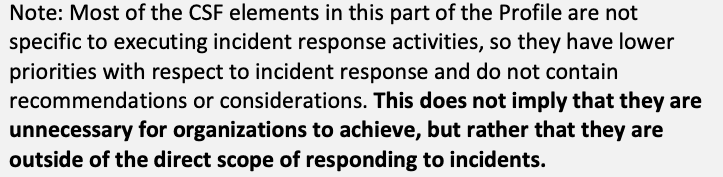
注：本Profileのこの部分に含まれるCSF要素のほとんどは、インシデント対応活動の実行に特化していない。そのため、インシデント対応に関する優先度が低く、推奨事項や考慮事項も含まない。これは、組織が達成する必要がないという意味ではなく、インシデント対応の直接的な範囲外であることを示す。
Table 2. CSF 2.0 Community Profile part 1: Preparation and Lessons Learned
表2. CSF 2.0 Community Profile 第1部：準備および教訓
| CSF Element | CSF Element Description | Priority | Recommendations, Considerations, Notes |
| GV (Govern) | The organization’s cybersecurity risk management strategy, expectations, and policy are established, communicated, and monitored | Low | |
| GV.OC (Organizational Context) | The circumstances — mission, stakeholder expectations, dependencies, and legal, regulatory, and contractual requirements — surrounding the organization’s cybersecurity risk management decisions are understood | Low | |
| GV.OC-01 | The organizational mission is understood and informs cybersecurity risk management | Low | |
| GV.OC-02 | Internal and external stakeholders are understood, and their needs and expectations regarding cybersecurity risk management are understood and considered | Low | |
| GV.OC-03 | Legal, regulatory, and contractual requirements | Medium | R1: Cybersecurity requirements should include all requirements related to incident |
原本PDFの抜粋画像
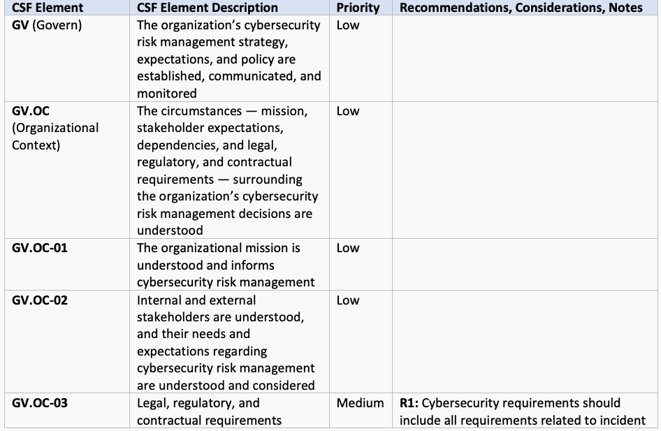
| CSF要素 | CSF要素の説明 | 優先度 | 推奨事項・考慮事項・注記 |
| GV（Govern：統治） | 組織のサイバーセキュリティリスク管理戦略、期待事項、方針を確立し、伝達し、監視する。 | 低 | |
| GV.OC（Organizational Context：組織の状況） | 組織のサイバーセキュリティリスク管理上の意思決定を取り巻く状況（使命、ステークホルダーの期待、依存関係、法的・規制上・契約上の要件）を把握する。 | 低 | |
| GV.OC-01 | 組織の使命を理解し、サイバーセキュリティリスク管理に反映する。 | 低 | |
| GV.OC-02 | 内部・外部ステークホルダーを把握し、サイバーセキュリティリスク管理に関する各自のニーズと期待を理解し、考慮する。 | 低 | |
| GV.OC-03 | 法的要件、規制上の要件、契約上の要件 | 中 | R1：サイバーセキュリティ要件には、インシデントに関連するすべての要件を含めるべきである |
| CSF Element | CSF Element Description | Priority | Recommendations, Considerations, Notes |
| regarding cybersecurity — including privacy and civil liberties obligations — are understood and managed | notifications, data breach reporting, and other aspects of incident response. | ||
| GV.OC-04 | Critical objectives, capabilities, and services that external stakeholders depend on or expect from the organization are understood and communicated | Medium | N1: Understanding critical external dependencies on the organization’s operations can aid in prioritizing response and recovery efforts. |
| GV.OC-05 | Outcomes, capabilities, and services that the organization depends on are understood and communicated | Medium | N1: Understanding critical dependencies on external resources (e.g., cloud-based hosting providers and managed service providers) can aid in prioritizing response and recovery efforts. |
| GV.RM (Risk Management Strategy) | The organization’s priorities, constraints, risk tolerance and appetite statements, and assumptions are established, communicated, and used to support operational risk decisions | Low | |
| GV.RM-01 | Risk management objectives are established and agreed to by organizational stakeholders | Low | |
| GV.RM-02 | Risk appetite and risk tolerance statements are established, communicated, and maintained | Low | |
| GV.RM-03 | Cybersecurity risk management activities and outcomes are included in enterprise risk management processes | Medium | R1: Have processes in place so that incident-related decision-making will be informed by other types of risks that the organization faces (e.g., privacy, operational, safety, reputational, AI) and not just cybersecurity risks in isolation. |
| GV.RM-04 | Strategic direction that describes appropriate risk response options is established and communicated | Low | |
| GV.RM-05 | Lines of communication across the organization are established for cybersecurity risks, including risks from suppliers and other third parties | Low | |
| GV.RM-06 | A standardized method for calculating, documenting, categorizing, and prioritizing cybersecurity risks is established and communicated | Medium | N1: Having a standardized method for calculating cybersecurity risks can aid in prioritizing response and recovery efforts and in comparing the estimated and actual impacts of incidents. N2: Such a method can also be used to establish criteria and inform decision |
原本PDFの抜粋画像
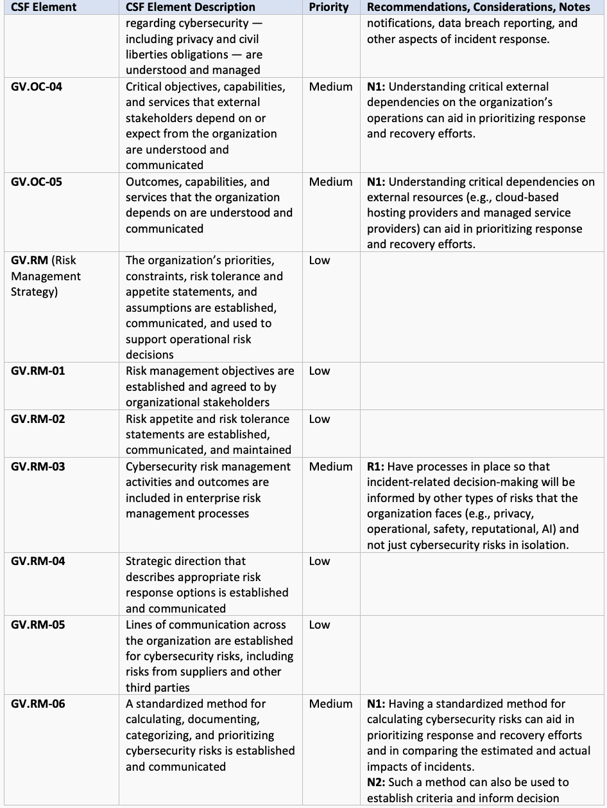
| CSF要素 | CSF要素の説明 | 優先度 | 推奨事項・考慮事項・注記 |
| サイバーセキュリティに関する（プライバシーおよび市民的自由に関する義務を含む）ものを把握し、管理する。 | インシデント通知、データ侵害の報告、その他のインシデント対応の側面。 | ||
| GV.OC-04 | 外部ステークホルダーが組織に期待する、または依存する重要な目標、能力、サービスを把握し、伝達する。 | 中 | N1：組織の業務に対する重要な外部依存関係を理解すると、対応・復旧の優先順位付けに役立つ。 |
| GV.OC-05 | 組織が依存する成果、能力、サービスを理解し、伝達する。 | 中 | N1：クラウドホスティング事業者やマネージドサービスプロバイダーなど、外部リソースへの重要な依存関係を理解すると、対応・復旧の優先順位付けに役立つ。 |
| GV.RM（Risk Management Strategy：リスク管理戦略） | 組織の優先事項、制約、リスク許容度、リスク選好に関する表明、前提条件を確立し、伝達して、運用上のリスク判断に活用する。 | 低 | |
| GV.RM-01 | リスク管理目標を定め、組織のステークホルダー間で合意する。 | 低 | |
| GV.RM-02 | リスク選好およびリスク許容度に関する表明を定め、伝達し、維持する。 | 低 | |
| GV.RM-03 | サイバーセキュリティリスク管理活動とその成果を、エンタープライズリスク管理プロセスに組み込む。 | 中 | R1：インシデント関連の意思決定が、サイバーセキュリティリスクだけを単独で考慮するのではなく、組織が直面する他の種類のリスク（プライバシー、運用、安全、評判、AIなど）も踏まえたものとなるよう、プロセスを整備する。 |
| GV.RM-04 | 適切なリスク対応の選択肢を記述した戦略的方向性を確立し、伝達する。 | 低 | |
| GV.RM-05 | サプライヤーその他の第三者から生じるリスクを含むサイバーセキュリティリスクについて、組織内の連絡経路を確立する。 | 低 | |
| GV.RM-06 | サイバーセキュリティリスクを算定、文書化、分類、優先順位付けする標準化手法を確立し、伝達する。 | 中 | N1：サイバーセキュリティリスクを算定する標準化された方法があると、対応・復旧活動の優先順位付けや、インシデントの推定影響と実際の影響の比較に役立つ。N2：このような方法は、基準の確立や、意思決定への情報提供にも利用できる。 |
| CSF Element | CSF Element Description | Priority | Recommendations, Considerations, Notes |
| making on when to escalate or elevate incident response activities. | |||
| GV.RM-07 | Strategic opportunities (i.e., positive risks) are characterized and are included in organizational cybersecurity risk discussions | Low | |
| GV.RR (Roles, Responsibilities, and Authorities) | Cybersecurity roles, responsibilities, and authorities to foster accountability, performance assessment, and continuous improvement are established and communicated | Medium | R1: Cybersecurity roles, responsibilities, and authorities should include incident response. |
| GV.RR-01 | Organizational leadership is responsible and accountable for cybersecurity risk and fosters a culture that is risk-aware, ethical, and continually improving | Medium | R1: See the recommendation for GV.RR. |
| GV.RR-02 | Roles, responsibilities, and authorities related to cybersecurity risk management are established, communicated, understood, and enforced | Medium | N1: Roles and responsibilities that involve cybersecurity incident response typically exist throughout an organization and often include third parties (e.g., those under contract) to help perform incident response activities for the organization. R1: All roles and responsibilities involving cybersecurity incident response should be documented in an organization’s policies. R2: All appropriate individuals or parties should be designated the authority necessary to fulfill their incident response-related responsibilities. R3: See the recommendation for GV.RR. |
| GV.RR-03 | Adequate resources are allocated commensurate with the cybersecurity risk strategy, roles, responsibilities, and policies | Low | |
| GV.RR-04 | Cybersecurity is included in human resources practices | Low | |
| GV.PO (Policy) | Organizational cybersecurity policy is established, communicated, and enforced | High | R1: Cybersecurity policies should include an incident response policy. |
| GV.PO-01 | Policy for managing cybersecurity risks is established based on organizational context, cybersecurity strategy, and priorities and is communicated and enforced | Low | |
| GV.PO-02 | Policy for managing cybersecurity risks is reviewed, | Low |
原本PDFの抜粋画像
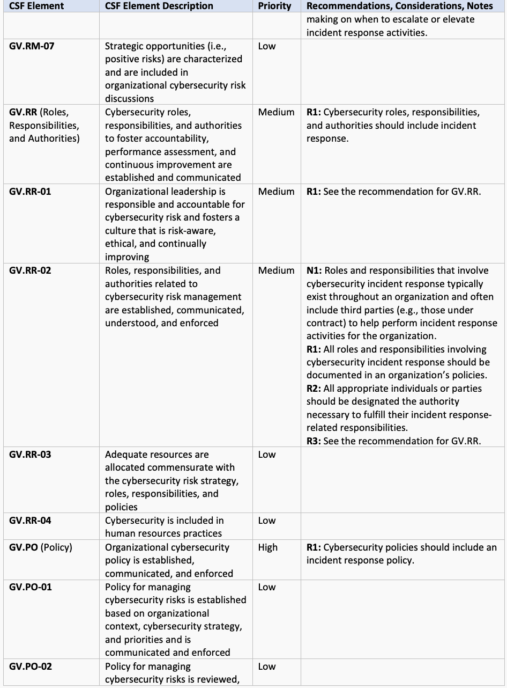
| CSF要素 | CSF要素の説明 | 優先度 | 推奨事項・考慮事項・注記 |
| インシデント対応活動をいつエスカレーションまたは引き上げるかに関するもの。 | |||
| GV.RM-07 | 戦略的機会（すなわち正のリスク）を特徴付け、組織のサイバーセキュリティリスクに関する議論に含める。 | 低 | |
| GV.RR（Roles, Responsibilities, and Authorities：役割、責任、権限） | 説明責任、パフォーマンス評価、継続的改善を促すサイバーセキュリティ上の役割、責任、権限を確立し、伝達する。 | 中 | R1：サイバーセキュリティ上の役割、責任、権限にはインシデント対応を含めるべきである。 |
| GV.RR-01 | 組織の経営陣は、サイバーセキュリティリスクに責任を持ち、説明責任を負うとともに、リスクを認識し、倫理的で、継続的に改善する文化を育む。 | 中 | R1：GV.RRの推奨事項を参照。 |
| GV.RR-02 | サイバーセキュリティリスク管理に関する役割、責任、権限を確立し、伝達し、理解させ、徹底する。 | 中 | N1：サイバーセキュリティインシデント対応に関する役割と責任は、通常、組織全体に存在し、組織のインシデント対応活動の実施を支援する第三者（例：契約先）もしばしば含まれる。R1：サイバーセキュリティインシデント対応に関わるすべての役割と責任を組織の方針に文書化すべきである。R2：適切なすべての個人または当事者に、インシデント対応に関する責任を果たすために必要な権限を付与すべきである。R3：GV.RRの推奨事項を参照。 |
| GV.RR-03 | サイバーセキュリティリスク戦略、役割、責任および方針に見合った十分な資源を割り当てる。 | 低 | |
| GV.RR-04 | 人事慣行にサイバーセキュリティを含める。 | 低 | |
| GV.PO（Policy：方針） | 組織のサイバーセキュリティ方針を確立し、伝達し、徹底する。 | 高 | R1：サイバーセキュリティ方針にはインシデント対応方針を含めるべきである。 |
| GV.PO-01 | 組織の状況、サイバーセキュリティ戦略、優先事項に基づいてサイバーセキュリティリスク管理方針を確立し、伝達し、徹底する。 | 低 | |
| GV.PO-02 | サイバーセキュリティリスクを管理する方針を見直し、 | 低 |
| CSF Element | CSF Element Description | Priority | Recommendations, Considerations, Notes |
| updated, communicated, and | |||
| enforced to reflect changes in | |||
| requirements, threats, | |||
| technology, and organizational | |||
| mission | |||
| GV.OV (Oversight) | Results of organization-wide cybersecurity risk management activities and performance are used to inform, improve, and adjust the risk management strategy | Low | |
| GV.OV-01 | Cybersecurity risk management | Medium | R1: Take past cybersecurity incidents into |
| strategy outcomes are reviewed | account when adjusting the organization’s | ||
| to inform and adjust strategy | cybersecurity risk management strategy | ||
| and direction | and direction. | ||
| GV.OV-02 | The cybersecurity risk management strategy is reviewed and adjusted to ensure coverage of organizational requirements and risks | Medium | R1: Take risks from past cybersecurity incidents into account when reviewing the organization’s cybersecurity risk management strategy. |
| GV.OV-03 | Organizational cybersecurity | Low | |
| risk management performance | |||
| is evaluated and reviewed for | |||
| adjustments needed | |||
| GV.SC (Cybersecurity Supply Chain Risk Management) | Cyber supply chain risk management processes are identified, established, managed, monitored, and improved by organizational stakeholders | Low | |
| GV.SC-01 | A cybersecurity supply chain risk | Low | |
| management program, strategy, | |||
| objectives, policies, and | |||
| processes are established and | |||
| agreed to by organizational | |||
| stakeholders | |||
| GV.SC-02 | Cybersecurity roles and responsibilities for suppliers, customers, and partners are established, communicated, and coordinated internally and externally | Low | N1: See GV.RR-02 for additional information on cybersecurity incident response-related roles and responsibilities for third parties. |
| GV.SC-03 | Cybersecurity supply chain risk | Low | |
| management is integrated into | |||
| cybersecurity and enterprise | |||
| risk management, risk | |||
| assessment, and improvement | |||
| processes | |||
| GV.SC-04 | Suppliers are known and prioritized by criticality | Low |
原本PDFの抜粋画像
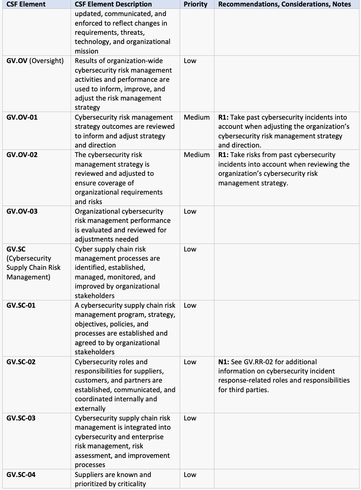
| CSF要素 | CSF要素の説明 | 優先度 | 推奨事項・考慮事項・注記 |
| 更新し、伝達し、 | |||
| 要件、脅威、 | |||
| 技術、組織の使命の変化を反映して | |||
| 徹底する | |||
| GV.OV（Oversight：監督） | 組織全体のサイバーセキュリティリスク管理活動と実績の結果を用いて、リスク管理戦略に情報を提供し、改善し、調整する | 低 | |
| GV.OV-01 | サイバーセキュリティリスク管理 | 中 | R1：組織のサイバーセキュリティリスク管理戦略と |
| 戦略の成果をレビューし、 | 方向性を調整する際には、 | ||
| 戦略と方向性に情報を提供し、調整する | 過去のサイバーセキュリティ | ||
| インシデントを考慮する。 | |||
| GV.OV-02 | 組織の要件およびリスクを網羅していることを確認するため、サイバーセキュリティリスク管理戦略をレビューし、調整する | 中 | R1：組織のサイバーセキュリティリスク管理戦略をレビューする際、過去のサイバーセキュリティインシデントから生じるリスクを考慮する。 |
| GV.OV-03 | 組織のサイバーセキュリティ | 低 | |
| リスク管理の実績を | |||
| 評価し、必要な調整について | |||
| レビューする | |||
| GV.SC（Cybersecurity Supply Chain Risk Management：サイバーセキュリティサプライチェーンリスク管理） | 組織のステークホルダーがサイバーサプライチェーンリスク管理プロセスを特定、確立、管理、監視し、改善する | 低 | |
| GV.SC-01 | サイバーセキュリティサプライチェーンリスク | 低 | |
| 管理プログラム、戦略、 | |||
| 目標、方針およびプロセスを | |||
| 確立し、 | |||
| 組織のステークホルダー間で | |||
| 合意する | |||
| GV.SC-02 | サプライヤー、顧客、パートナーのサイバーセキュリティ上の役割と責任を確立し、内外に伝達して調整する | 低 | N1：第三者のサイバーセキュリティインシデント対応に関する役割と責任についての追加情報はGV.RR-02を参照。 |
| GV.SC-03 | サイバーセキュリティサプライチェーンリスク | 低 | |
| 管理を、サイバーセキュリティおよび | |||
| エンタープライズのリスク管理、 | |||
| リスク評価、 | |||
| 改善プロセスに | |||
| 統合する | |||
| GV.SC-04 | サプライヤーを把握し、重要度に基づき優先順位を付ける | 低 |
原本PDFの抜粋画像
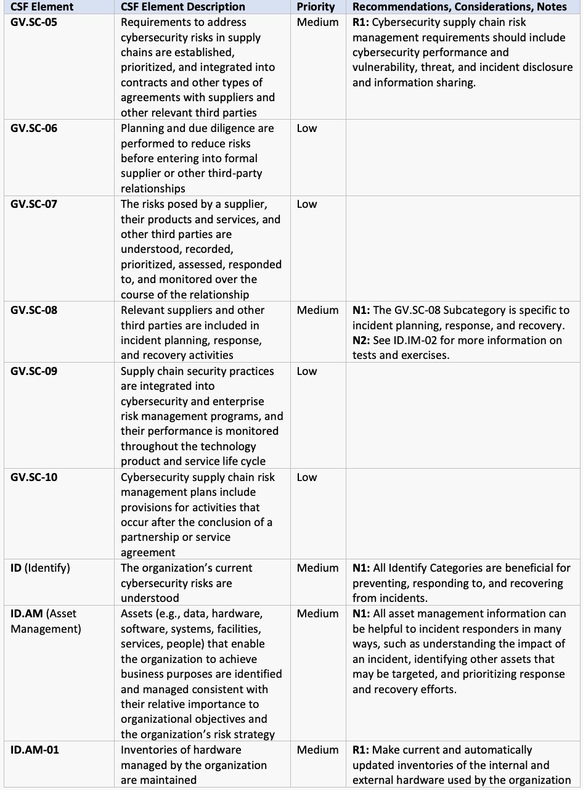
| CSF Element | CSF Element Description | Priority | Recommendations, Considerations, Notes |
| available for use in finding and addressing | |||
| vulnerabilities, monitoring operations and | |||
| usage to detect adverse cybersecurity | |||
| events, and identifying “shadow IT” usage. | |||
| ID.AM-02 | Inventories of software, services, and systems managed by the organization are maintained | Medium | R1: Make current and automatically updated inventories of the internal and external software, services, and systems used by the organization available for use in finding and addressing vulnerabilities, monitoring operations and usage to detect adverse cybersecurity events, and identifying “shadow IT” usage. |
| ID.AM-03 | Representations of the organization’s authorized network communication and internal and external network data flows are maintained | Medium | N1: Maintaining network data flow |
| representations can improve the accuracy | |||
| of detecting malicious data flows and | |||
| communication. | |||
| C1: Consider leveraging automation and | |||
| zero trust architectures to automatically | |||
| create and maintain network data flow | |||
| representations. | |||
| ID.AM-04 | Inventories of services provided by suppliers are maintained | Medium | R1: Current and automatically updated inventories of the services provided by the organization’s suppliers should be available for use in finding and addressing vulnerabilities, monitoring operations and usage to detect adverse cybersecurity events, and identifying “shadow IT” usage. |
| ID.AM-05 | Assets are prioritized based on classification, criticality, resources, and impact on the mission | Medium | R1: Prioritizing the organization’s assets — |
| including hardware, software, services, | |||
| systems, and data — and being aware of | |||
| the dependencies between those and other | |||
| assets should help indicate where the | |||
| organization should focus its resources in | |||
| terms of protection, detection, response, | |||
| and recovery. | |||
| ID.AM-07 | Inventories of data and corresponding metadata for designated data types are maintained | Medium | R1: Having data inventories that include data classifications, owners, and logical and physical locations should provide valuable information on what data may have been involved in an incident. |
| ID.AM-08 | Systems, hardware, software, services, and data are managed throughout their life cycles | Medium | R1: Managing hardware, software, services, |
| and systems throughout their life cycles | |||
| should take cybersecurity into | |||
| consideration, such as configuring them | |||
| securely, reducing attack surfaces, and | |||
| updating inventory information as assets | |||
| are transferred or relocated. | |||
| ID.RA (Risk Assessment) | The cybersecurity risk to the organization, assets, and individuals is understood by the organization | Medium | N1: Risk assessment practices are critical for reducing the number of incidents that occur and the impacts they cause. Risk assessment is a vast topic that is outside of |
原本PDFの抜粋画像
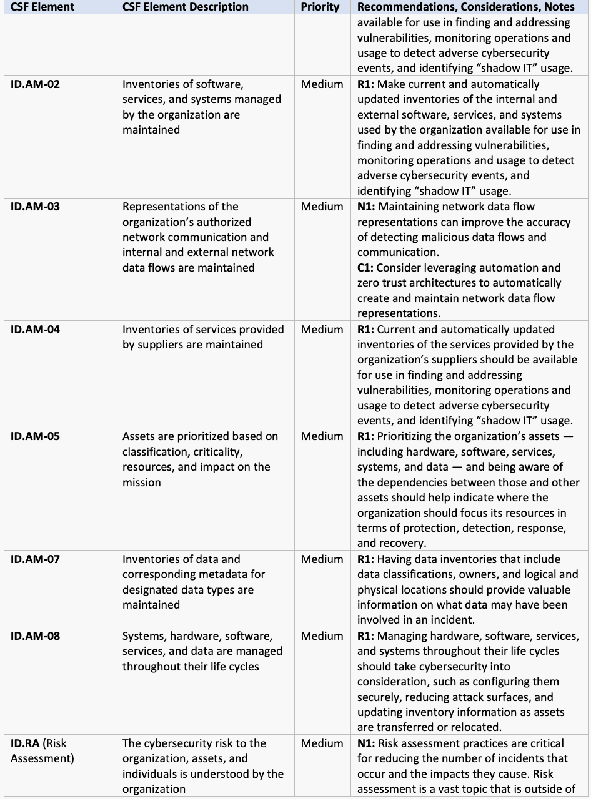
| CSF要素 | CSF要素の説明 | 優先度 | 推奨事項、考慮事項、注記 |
| 脆弱性の発見と対処、 | |||
| 運用および使用状況の監視による | |||
| 有害なサイバーセキュリティ事象の検知、 | |||
| 「シャドーIT」の使用の特定に利用できるようにする。 | |||
| ID.AM-02 | 組織が管理するソフトウェア、サービス、システムのインベントリを維持する | Medium（中） | R1: 組織が使用する内部および外部のソフトウェア、サービス、システムの最新かつ自動更新されるインベントリを、脆弱性の発見・対処、運用状況および使用状況の監視、有害なサイバーセキュリティ事象の検知、「シャドーIT」の使用特定に利用できるようにする。 |
| ID.AM-03 | 組織で許可されたネットワーク通信ならびに内部・外部のネットワークデータフローを表す情報を維持する | Medium（中） | N1: ネットワークデータフローの |
| 表現を維持すると、悪意あるデータフローや | |||
| 通信の検知精度を高められる。 | |||
| C1: 自動化とゼロトラストアーキテクチャを | |||
| 活用してネットワークデータフローの表現を | |||
| 自動的に作成・維持することを | |||
| 検討する。 | |||
| ID.AM-04 | サプライヤーが提供するサービスのインベントリを維持する | Medium（中） | R1: 組織のサプライヤーが提供するサービスについて、最新かつ自動更新されるインベントリを、脆弱性の発見・対処、運用状況および使用状況の監視、有害なサイバーセキュリティ事象の検知、「シャドーIT」の使用特定に利用できるようにすべきである。 |
| ID.AM-05 | 資産を分類、重要度、リソース、ミッションへの影響に基づいて優先順位付けする | Medium（中） | R1: ハードウェア、ソフトウェア、サービス、システム、データを含む組織資産に優先順位を付け、 |
| それらと他の資産との依存関係を | |||
| 把握しておくことにより、 | |||
| 保護、検知、対応、復旧のために | |||
| 組織がどこへリソースを重点配分すべきかを | |||
| 判断しやすくなる。 | |||
| ID.AM-07 | 指定されたデータ種別について、データおよび対応するメタデータのインベントリを維持する | Medium（中） | R1: データ分類、所有者、論理的・物理的な所在を含むデータインベントリがあれば、インシデントに関与した可能性のあるデータに関する有用な情報が得られる。 |
| ID.AM-08 | システム、ハードウェア、ソフトウェア、サービス、データをライフサイクル全体にわたって管理する | Medium（中） | R1: ハードウェア、ソフトウェア、サービス、 |
| システムをライフサイクル全体にわたって | |||
| 管理する際には、サイバーセキュリティを考慮すべきである。 | |||
| たとえば、安全な設定、攻撃対象領域の縮小、 | |||
| 資産の移管や移設に伴うインベントリ情報の | |||
| 更新などを行う。 | |||
| ID.RA（リスク評価） | 組織、資産、個人に対するサイバーセキュリティリスクを組織が理解している | Medium（中） | N1: リスク評価の実践は、発生するインシデント数とその影響を減らすうえで重要である。リスク評価は広範なテーマであり、 |
| CSF Element | CSF Element Description | Priority | Recommendations, Considerations, Notes |
| the scope of this Profile other than to summarize its importance for incident response. N2: See [SP800-37r2] for more information on cybersecurity risk. N3: See [SP800-30r1] for more information on cybersecurity risk assessment. | |||
| ID.RA-01 | Vulnerabilities in assets are identified, validated, and recorded | Medium | R1: Understand current known |
| cybersecurity vulnerabilities to make | |||
| informed decisions when assessing risks. | |||
| This should include all types of known | |||
| cybersecurity vulnerabilities, such as flaws | |||
| in software (including firmware and | |||
| software-based services) developed by the | |||
| organization and third parties, software | |||
| misconfigurations, network and system | |||
| design and implementation weaknesses, | |||
| physical vulnerabilities and resilience issues | |||
| in facilities that house computing assets, | |||
| and integrity violations in hardware and | |||
| software (e.g., counterfeit, evidence of | |||
| tampering). | |||
| N1: See the notes for ID.RA. | |||
| ID.RA-02 | Cyber threat intelligence is received from information sharing forums and sources | High | N1: Cyber threat intelligence (CTI) is threat information that has been aggregated, transformed, analyzed, interpreted, or enriched to provide the necessary context for decision-making processes. Organizations can receive CTI from automated CTI feeds, information sharing forums, and other sources. N2: CTI is useful for incident response and recovery in several ways, including obtaining information on new threats, improving the accuracy of cybersecurity technologies with incident detection or response capabilities, and understanding the tactics, techniques, and procedures (TTPs) used by attackers. TTPs describe the behavior of an actor. Information on threats and their TTPs is widely available through repositories and knowledge bases. N3: [SP800-150] provides guidelines on consuming, using, and storing CTIs, as well as establishing CTI relationships. N4: See the notes for ID.RA. |
| ID.RA-03 | Internal and external threats to the organization are identified and recorded | Medium | R1: Identify internal and external threats |
| during routine operations and from CTI. | |||
| N1: Other possible methods that | |||
| organizations could consider for identifying |
原本PDFの抜粋画像
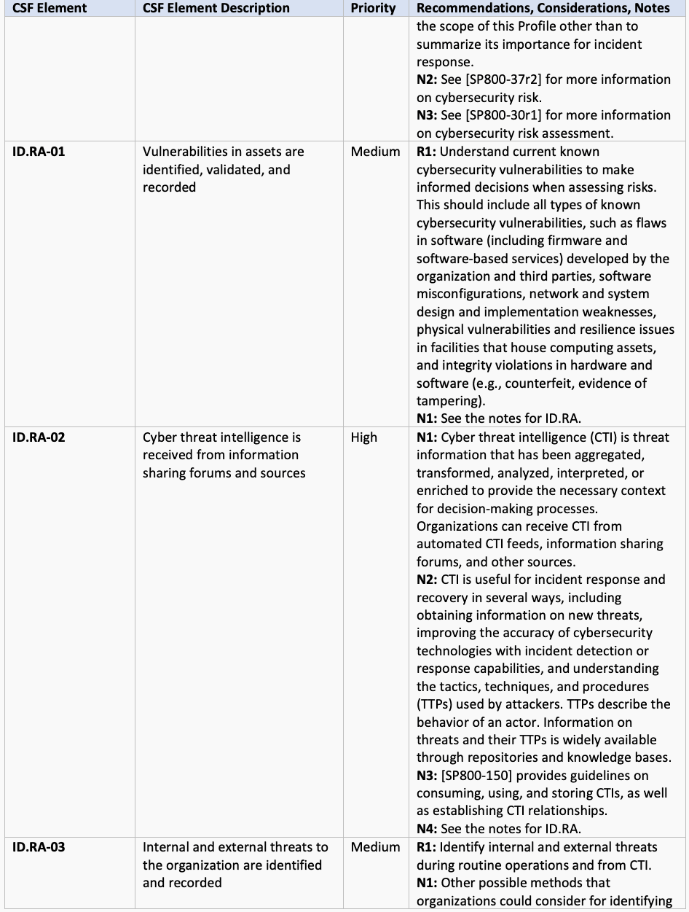
| CSF要素 | CSF要素の説明 | 優先度 | 推奨事項、考慮事項、注記 |
| 本プロファイルの範囲外である（インシデント対応における重要性を要約する場合を除く）。N2: サイバーセキュリティリスクの詳細は[SP800-37r2]を参照。N3: サイバーセキュリティリスク評価の詳細は[SP800-30r1]を参照。 | |||
| ID.RA-01 | 資産の脆弱性を特定、検証し、記録する | Medium（中） | R1: 現在知られているサイバーセキュリティ上の脆弱性を理解し、 |
| リスクを評価する際に | |||
| 情報に基づいた判断を行う。 | |||
| 既知のあらゆる種類の | |||
| サイバーセキュリティ上の脆弱性を含めるべきである。たとえば、 | |||
| ソフトウェア（ファームウェアや | |||
| ソフトウェアベースのサービスを含む）の欠陥で、 | |||
| 組織または第三者が開発したもの、ソフトウェアの | |||
| 誤設定、ネットワークやシステムの | |||
| 設計・実装上の弱点、 | |||
| コンピューティング資産を収容する | |||
| 施設における物理的な脆弱性とレジリエンス上の問題、 | |||
| ハードウェアおよびソフトウェアの完全性侵害 | |||
| （偽造品、改ざんの痕跡など）も含む。 | |||
| N1: ID.RAの注記を参照。 | |||
| ID.RA-02 | 情報共有フォーラムおよび情報源からサイバー脅威インテリジェンスを受領する | High（高） | N1: サイバー脅威インテリジェンス（CTI）とは、意思決定に必要な文脈を提供するために集約、変換、分析、解釈または拡充された脅威情報である。組織は、自動CTIフィード、情報共有フォーラム、その他の情報源からCTIを受領できる。N2: CTIは、新たな脅威の情報取得、インシデント検知・対応機能を備えたサイバーセキュリティ技術の精度向上、攻撃者が用いる戦術・技法・手順（TTP）の理解など、インシデント対応と復旧に有用である。TTPは行為主体の振る舞いを表す。脅威およびTTPの情報は、リポジトリやナレッジベースで広く入手できる。N3: CTIの利用、活用、保管、およびCTI関係の確立に関する指針は[SP800-150]を参照。N4: ID.RAの注記を参照。 |
| ID.RA-03 | 組織に対する内部および外部の脅威を特定し、記録する | Medium（中） | R1: 日常業務の中で、またCTIを用いて、 |
| 内部および外部の脅威を特定する。 | |||
| N1: 組織が特定のために | |||
| 検討できる他の方法としては |
| CSF Element | CSF Element Description | Priority | Recommendations, Considerations, Notes |
| threats include threat hunting and the use | |||
| of deception technologies. | |||
| N2: See the notes for ID.RA. | |||
| ID.RA-04 | Potential impacts and likelihoods of threats exploiting vulnerabilities are identified and recorded | Medium | N1: Recording the potential impacts and likelihoods of threats exploiting vulnerabilities is necessary for determining risk. N2: See the notes for ID.RA. |
| ID.RA-05 | Threats, vulnerabilities, likelihoods, and impacts are used to understand inherent risk and inform risk response prioritization | High | R1: Organizations with mechanisms in place |
| for estimating cybersecurity risk as part of | |||
| their cybersecurity risk management | |||
| programs should use those mechanisms for | |||
| incident response purposes. | |||
| C1: Consider using threat modeling and | |||
| other methods to inform the understanding | |||
| of attack vectors, attack surfaces, and | |||
| lateral paths through organizational assets, | |||
| among other factors that contribute to risk. | |||
| N1: See the notes for ID.RA. | |||
| ID.RA-06 | Risk responses are chosen, prioritized, planned, tracked, and communicated | High | N1: Risk responses are needed to prevent future incidents from occurring and existing incidents from reoccurring. R1: The organization’s policies, processes, and procedures should provide guidance (e.g., criteria) for making decisions regarding appropriate risk responses in various situations. N2: The four types of risk responses are 1) Accept (accept the risk as is), 2) Mitigate (reduce the risk by eliminating the vulnerabilities and/or deploying additional security controls to reduce vulnerability exploitation), 3) Transfer (reduce the risk by sharing some of the consequences with another party), and 4) Avoid (ensure that the risk does not occur by eliminating the attack surface). N3: See [IR8286] for more information on risk responses. N4: See the notes for ID.RA. |
| ID.RA-07 | Changes and exceptions are | Medium | N1: See the notes for ID.RA. |
| managed, assessed for risk | |||
| impact, recorded, and tracked | |||
| ID.RA-08 | Processes for receiving, analyzing, and responding to vulnerability disclosures are established | Medium | N1: A vulnerability disclosure is when a third party reports a suspected vulnerability in one of the organization’s systems to the organization. N2: See [SP800-216] for more information on vulnerability disclosure. N3: See Section 4.5.2 of [SP800-150] for guidance on using data formats that may |
原本PDFの抜粋画像
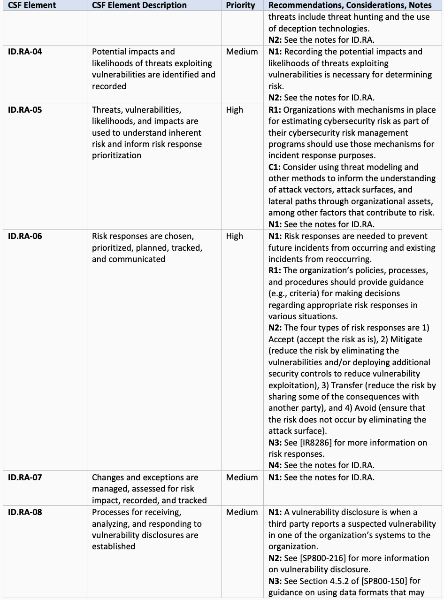
| CSF要素 | CSF要素の説明 | 優先度 | 推奨事項、考慮事項、注記 |
| 脅威には、脅威ハンティングや | |||
| 欺瞞技術の利用が含まれる。 | |||
| N2: ID.RAの注記を参照。 | |||
| ID.RA-04 | 脆弱性を悪用する脅威の潜在的な影響と発生可能性を特定し、記録する | Medium（中） | N1: 脆弱性を悪用する脅威の潜在的影響と発生可能性を記録することは、リスクの判断に必要である。N2: ID.RAの注記を参照。 |
| ID.RA-05 | 脅威、脆弱性、発生可能性、影響を用いて固有リスクを理解し、リスク対応の優先順位付けに役立てる | High（高） | R1: サイバーセキュリティリスク管理プログラムの一環として |
| サイバーセキュリティリスクを推定する仕組みを備える組織は、 | |||
| その仕組みを | |||
| インシデント対応にも | |||
| 活用すべきである。 | |||
| C1: 脅威モデリングや | |||
| その他の手法を用いて、 | |||
| 攻撃ベクトル、攻撃対象領域、 | |||
| 組織資産内の横展開経路など、 | |||
| リスクに影響する要因を理解することを検討する。 | |||
| N1: ID.RAの注記を参照。 | |||
| ID.RA-06 | リスク対応を選択し、優先順位付けし、計画し、追跡し、伝達する | High（高） | N1: リスク対応は、将来のインシデント発生および既存インシデントの再発を防ぐために必要である。R1: 組織の方針、プロセス、手順は、状況に応じて適切なリスク対応を決定するための指針（基準など）を示すべきである。N2: リスク対応は4種類ある。1) 受容（リスクをそのまま受け入れる）、2) 低減（脆弱性を除去する、および／または追加のセキュリティ管理策を導入して脆弱性の悪用を抑えることでリスクを減らす）、3) 移転（結果の一部を他者と分担してリスクを減らす）、4) 回避（攻撃対象領域をなくしてリスクが発生しないようにする）。N3: リスク対応の詳細は[IR8286]を参照。N4: ID.RAの注記を参照。 |
| ID.RA-07 | 変更および例外を | Medium（中） | N1: ID.RAの注記を参照。 |
| 管理し、リスクへの | |||
| 影響を評価し、記録して追跡する | |||
| ID.RA-08 | 脆弱性開示を受領、分析し、対応するプロセスを確立する | Medium（中） | N1: 脆弱性開示とは、第三者が組織のシステムに脆弱性が存在する疑いを組織へ報告することである。N2: 脆弱性開示の詳細は[SP800-216]を参照。N3: 次のことを支援し得るデータ形式の利用に関する指針は、[SP800-150]の4.5.2節を参照。 |
| CSF Element | CSF Element Description | Priority | Recommendations, Considerations, Notes |
| assist with maintaining cross-references between asset inventories and sources of vulnerability disclosures. N4: See the notes for ID.RA. | |||
| ID.RA-09 | The authenticity and integrity of | Medium | N1: See the notes for ID.RA. |
| hardware and software are | |||
| assessed prior to acquisition | |||
| and use | |||
| ID.RA-10 | Critical suppliers are assessed prior to acquisition | Low | N1: See the notes for ID.RA. |
| ID.IM (Improvement) | Improvements to organizational | Medium | N1: See the note for ID. |
| cybersecurity risk management | |||
| processes, procedures, and | |||
| activities are identified across | |||
| all CSF Functions | |||
| ID.IM-01 | Improvements are identified from evaluations | Medium | R1: Periodically evaluate incident response program performance to identify problems and deficiencies that should be corrected. N1: Possible evaluation forms include self- assessments, third-party assessments, and independent audits. |
| ID.IM-02 | Improvements are identified from security tests and exercises, including those done in coordination with suppliers and relevant third parties | High | N1: Incident response exercises and tests |
| may provide helpful information for | |||
| program evaluation and prepare staff and | |||
| involved third parties (e.g., critical service | |||
| providers and product suppliers) for future | |||
| incident response activities. | |||
| N2: See [SP800-84] for more information on | |||
| simulations, tabletop discussions, and other | |||
| forms of exercises. | |||
| ID.IM-03 | Improvements are identified from the execution of operational processes, procedures, and activities | High | N1: The execution of operational processes, procedures, and activities includes all incident response and recovery efforts. N2: Improvements that affect incident response can be made to the incident response program itself (e.g., plan, policy, processes, procedures) or to other aspects of the organization’s cybersecurity risk management activities (e.g., identifying TTPs that are not currently being blocked by safeguards or flagged by detection technologies). N3: Improvements are often identified when creating follow-up reports for incidents or holding “lessons learned” meetings when an incident’s recovery efforts are concluding, especially if the incident was major. This provides an opportunity to review what happened, what actions were taken, and how effective those actions were, as well as hear from all |
原本PDFの抜粋画像
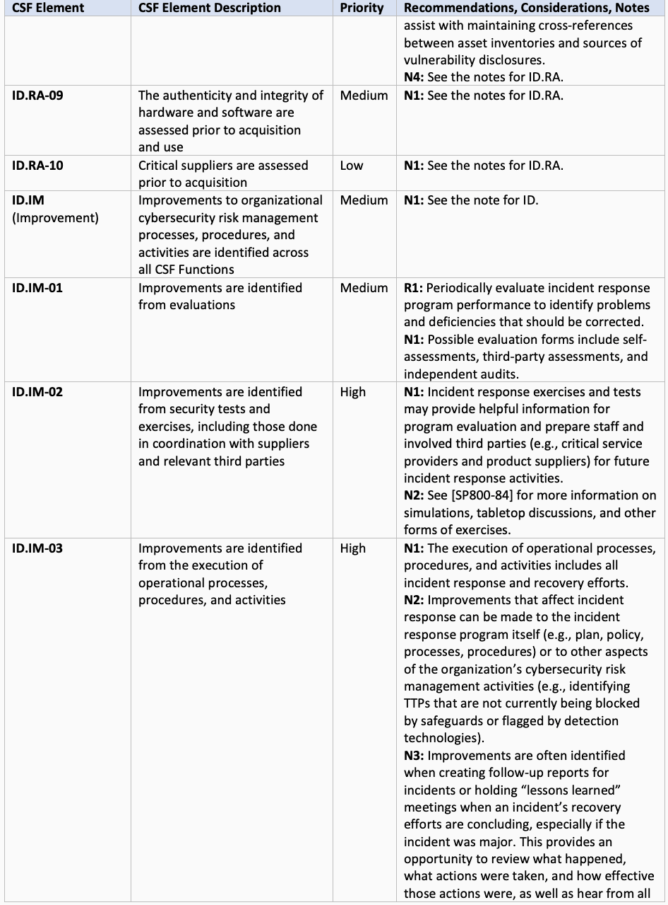
| CSF要素 | CSF要素の説明 | 優先度 | 推奨事項、考慮事項、注記 |
| 資産インベントリと脆弱性開示の情報源との間の相互参照の維持を支援する。N4: ID.RAの注記を参照。 | |||
| ID.RA-09 | ハードウェアおよびソフトウェアの | Medium（中） | N1: ID.RAの注記を参照。 |
| 真正性と完全性を | |||
| 取得前および使用前に | |||
| 評価する。 | |||
| ID.RA-10 | 重要なサプライヤーを取得前に評価する | Low（低） | N1: ID.RAの注記を参照。 |
| ID.IM（改善） | 組織の | Medium（中） | N1: IDの注記を参照。 |
| サイバーセキュリティリスク管理の | |||
| プロセス、手順、 | |||
| 活動に関する改善を、 | |||
| すべてのCSF機能にわたって特定する | |||
| ID.IM-01 | 評価から改善点を特定する | Medium（中） | R1: インシデント対応プログラムの実績を定期的に評価し、是正すべき問題や欠陥を特定する。N1: 評価方法には、自己評価、第三者評価、独立監査などがある。 |
| ID.IM-02 | サプライヤーや関連する第三者と連携して行うものを含め、セキュリティ試験や演習から改善点を特定する | High（高） | N1: インシデント対応の演習や試験は |
| プログラムの評価に役立つ情報を提供し、 | |||
| 職員および関係する第三者を | |||
| （重要なサービス提供者や製品サプライヤーなど） | |||
| 今後のインシデント対応活動に | |||
| 備えさせることができる。 | |||
| N2: シミュレーション、机上討議、その他の演習形式の詳細は | |||
| [SP800-84]を参照。 | |||
| ID.IM-03 | 運用プロセス、手順、活動の実施から改善点を特定する | High（高） | N1: 運用プロセス、手順、活動の実施には、すべてのインシデント対応および復旧の取り組みが含まれる。N2: インシデント対応に影響する改善は、インシデント対応プログラム自体（計画、方針、プロセス、手順など）にも、組織のサイバーセキュリティリスク管理活動の他の側面（保護策で遮断されていない、または検知技術で検出されていないTTPの特定など）にも適用できる。N3: 改善点は、インシデントのフォローアップ報告書を作成するときや、インシデントの復旧作業が終わる時点で「教訓」会議を開くときに特定されることが多く、特にインシデントが重大だった場合にそうである。これにより、何が起き、どのような措置を講じ、その効果がどの程度だったかを振り返る機会となるとともに、すべての |
| CSF Element | CSF Element Description | Priority | Recommendations, Considerations, Notes |
| parties involved in the incident. Such a meeting can help identify and prioritize potential improvements to the organization’s incident response program and cybersecurity risk management efforts. | |||
| ID.IM-04 | Incident response plans and other cybersecurity plans that affect operations are established, communicated, maintained, and improved | High | N1: Several types of cybersecurity plans are |
| relevant to incident response, including 1) | |||
| incident response plans, which provide the | |||
| roadmap for implementing the incident | |||
| response capability; 2) vulnerability | |||
| management plans, which help identify and | |||
| assess all types of vulnerabilities and | |||
| prioritize, test, and implement risk | |||
| responses; and 3) business continuity plans. | |||
| R1: Synchronize business continuity plans | |||
| with incident response plans since incidents | |||
| can undermine business resilience. | |||
| R2: Review and update all cybersecurity | |||
| plans periodically or when a need for | |||
| significant improvements is identified. | |||
| R3: Base each cybersecurity plan on the | |||
| organization’s unique requirements, | |||
| mission, size, structure, and functions. | |||
| R4: Each cybersecurity plan should identify | |||
| the resources and management support | |||
| needed to carry it out successfully. | |||
| N2: Business continuity planning | |||
| professionals who are made aware of | |||
| cybersecurity incidents and their impacts | |||
| can fine-tune business impact assessments, | |||
| risk assessments, and continuity of | |||
| operations plans. Further, because business | |||
| continuity planners have extensive | |||
| expertise in minimizing operational | |||
| disruption during severe circumstances, | |||
| they may be valuable in planning responses | |||
| to specific incident types, such as denial-of- | |||
| service (DoS) conditions. | |||
| PR (Protect) | Safeguards to manage the organization’s cybersecurity risks are used | Medium | N1: Lowering the number of incidents shortens operational disruptions, allows response teams to focus on high-impact situations, and reduces the impact of incidents that do occur (e.g., by making it harder for attackers to move laterally throughout an environment and, thus, slowing them down). N2: Understanding the protection mechanisms in place can help personnel deploy methods to detect protection failures and bypasses. |
原本PDFの抜粋画像
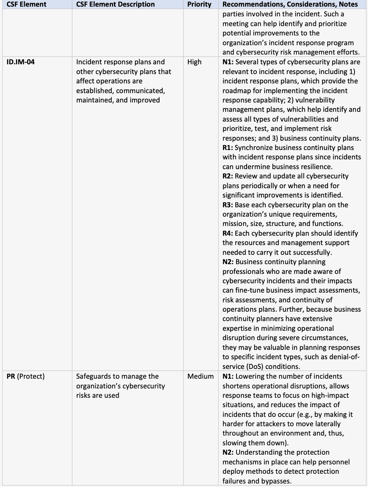
| CSF要素 | CSF要素の説明 | 優先度 | 推奨事項、考慮事項、注記 |
| インシデントの関係者。こうした会議は、組織のインシデント対応プログラムとサイバーセキュリティリスク管理の取り組みに関する潜在的な改善点を特定し、優先順位付けするのに役立つ。 | |||
| ID.IM-04 | 運用に影響するインシデント対応計画その他のサイバーセキュリティ計画を策定、伝達、維持し、改善する | High（高） | N1: インシデント対応に関係するサイバーセキュリティ計画には、いくつかの種類がある。 |
| 具体的には、1) | |||
| インシデント対応能力を実施するための | |||
| ロードマップとなる | |||
| インシデント対応計画、2) 脆弱性 | |||
| 管理計画（あらゆる種類の脆弱性を特定・ | |||
| 評価し、リスク対応の優先順位付け、 | |||
| 試験、実施を支援するもの）、および | |||
| 3) 事業継続計画である。 | |||
| R1: 事業継続計画を | |||
| インシデント対応計画と整合させる。インシデントは | |||
| 事業のレジリエンスを損なうおそれがある。 | |||
| R2: すべてのサイバーセキュリティ計画を | |||
| 定期的に、または大幅な改善の必要性が | |||
| 特定されたときに見直し、更新する。 | |||
| R3: 各サイバーセキュリティ計画は、 | |||
| 組織固有の要件、 | |||
| ミッション、規模、構造、機能に基づいて策定する。 | |||
| R4: 各サイバーセキュリティ計画に、 | |||
| 実施に必要なリソースと経営層の支援を | |||
| 明記すべきである。 | |||
| N2: 事業継続計画の | |||
| 担当者が | |||
| サイバーセキュリティインシデントとその影響を | |||
| 把握していれば、事業影響評価、 | |||
| リスク評価、業務継続計画を | |||
| より適切に調整できる。さらに、事業 | |||
| 継続計画の担当者は、重大な状況下での | |||
| 業務中断を最小限に抑える豊富な | |||
| 専門知識を持つため、 | |||
| 特定のインシデント種別（たとえば | |||
| サービス拒否（DoS） | |||
| 状態）への対応計画に役立つ場合がある。 | |||
| PR（保護） | 組織のサイバーセキュリティリスクを管理するための保護策を使用する | Medium（中） | N1: インシデント数を減らすと、業務中断が短縮され、対応チームは影響の大きい状況に集中でき、実際に発生するインシデントの影響も軽減される（たとえば、攻撃者が環境内を横展開しにくくすることで、攻撃者の進行を遅らせる）。N2: 導入済みの保護メカニズムを理解していれば、保護の失敗や回避を検知する方法を職員が導入する際に役立つ。 |
| CSF Element | CSF Element Description | Priority | Recommendations, Considerations, Notes |
| N3: It is outside of the scope of this Profile to provide recommendations and considerations on protecting assets, other than a few notes of practices that specifically benefit incident response activities. | |||
| PR.AA (Identity Management, Authentication, and Access Control) | Access to physical and logical | Medium | N1: See the notes for PR. |
| assets is limited to authorized | |||
| users, services, and hardware | |||
| and managed commensurate | |||
| with the assessed risk of | |||
| unauthorized access | |||
| PR.AA-01 | Identities and credentials for authorized users, services, and hardware are managed by the organization | Medium | N1: See the notes for PR. |
| PR.AA-02 | Identities are proofed and | Medium | N1: See the notes for PR. |
| bound to credentials based on | |||
| the context of interactions | |||
| PR.AA-03 | Users, services, and hardware are authenticated | Medium | N1: See the notes for PR. |
| PR.AA-04 | Identity assertions are | Medium | N1: See the notes for PR. |
| protected, conveyed, and | |||
| verified | |||
| PR.AA-05 | Access permissions, entitlements, and authorizations are defined in a policy, managed, enforced, and reviewed, and incorporate the principles of least privilege and separation of duties | Medium | N1: See the notes for PR. |
| PR.AA-06 | Physical access to assets is | Medium | N1: See the notes for PR. |
| managed, monitored, and | |||
| enforced commensurate with | |||
| risk | |||
| PR.AT (Awareness and Training) | The organization’s personnel are provided with cybersecurity awareness and training so that they can perform their cybersecurity-related tasks | Medium | N1: See the notes for PR. |
| PR.AT-01 | Personnel are provided with | Medium | N1: See the notes for PR. |
| awareness and training so that | |||
| they possess the knowledge and | |||
| skills to perform general tasks | |||
| with cybersecurity risks in mind | |||
| PR.AT-02 | Individuals in specialized roles are provided with awareness and training so that they possess the knowledge and skills to perform relevant tasks with cybersecurity risks in mind | Medium | R1: Role-based training should include incident-related responsibilities. N1: See the notes for PR. |
原本PDFの抜粋画像
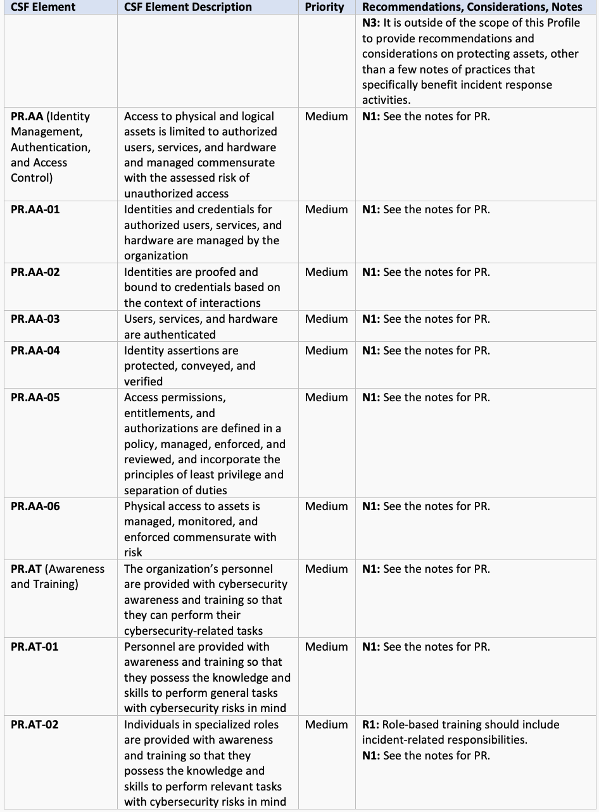
| CSF要素 | CSF要素の説明 | 優先度 | 推奨事項、考慮事項、注記 |
| N3: 資産の保護に関する推奨事項や考慮事項を示すことは本プロファイルの範囲外である。ただし、インシデント対応に特に役立つ実践について、いくつかの注記を記載する。 | |||
| PR.AA（アイデンティティ管理、認証、アクセス制御） | 物理的および論理的な | Medium（中） | N1: PRの注記を参照。 |
| 資産へのアクセスを認可された | |||
| ユーザー、サービス、ハードウェアに限定し、 | |||
| アクセスを管理する。管理の程度は | |||
| 不正アクセスに関する評価済みリスクに | |||
| 応じる。 | |||
| PR.AA-01 | 認可されたユーザー、サービス、ハードウェアのアイデンティティとクレデンシャルを組織が管理する | Medium（中） | N1: PRの注記を参照。 |
| PR.AA-02 | アイデンティティを証明し、 | Medium（中） | N1: PRの注記を参照。 |
| やり取りの状況に基づいて | |||
| クレデンシャルに結び付ける。 | |||
| PR.AA-03 | ユーザー、サービス、ハードウェアを認証する | Medium（中） | N1: PRの注記を参照。 |
| PR.AA-04 | アイデンティティのアサーションを | Medium（中） | N1: PRの注記を参照。 |
| 保護し、伝達し、 | |||
| 検証する。 | |||
| PR.AA-05 | アクセス権限、資格、認可をポリシーで定義し、管理、実施、見直しを行い、最小権限と職務分離の原則を取り入れる | Medium（中） | N1: PRの注記を参照。 |
| PR.AA-06 | 資産への物理アクセスを | Medium（中） | N1: PRの注記を参照。 |
| 管理、監視し、 | |||
| リスクに応じて | |||
| 実施する。 | |||
| PR.AT（意識向上およびトレーニング） | 職員がサイバーセキュリティ関連業務を遂行できるよう、サイバーセキュリティの意識向上とトレーニングを提供する | Medium（中） | N1: PRの注記を参照。 |
| PR.AT-01 | 職員に意識向上とトレーニングを | Medium（中） | N1: PRの注記を参照。 |
| 提供して、 | |||
| サイバーセキュリティリスクを考慮しながら | |||
| 一般的な業務を遂行するための知識と | |||
| スキルを身に付けさせる。 | |||
| PR.AT-02 | 専門的な役割を担う人に意識向上とトレーニングを提供し、サイバーセキュリティリスクを考慮しながら関連業務を遂行するための知識とスキルを身に付けさせる | Medium（中） | R1: 役割別トレーニングにインシデント関連の責任を含めるべきである。N1: PRの注記を参照。 |
原本PDFの抜粋画像
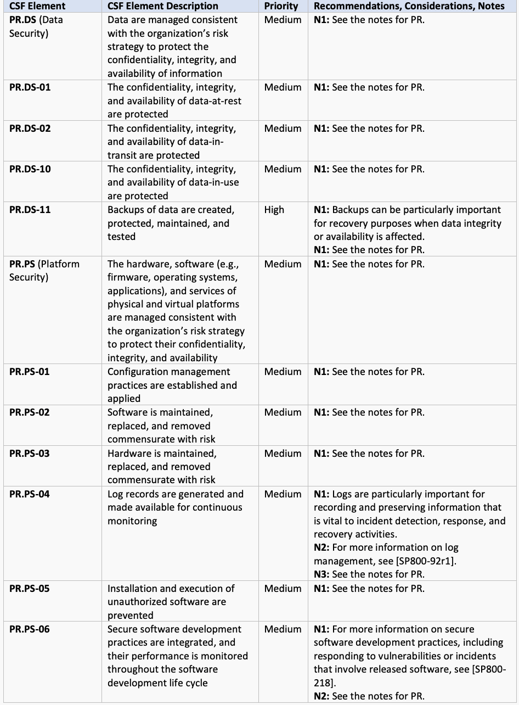
原本PDFの抜粋画像
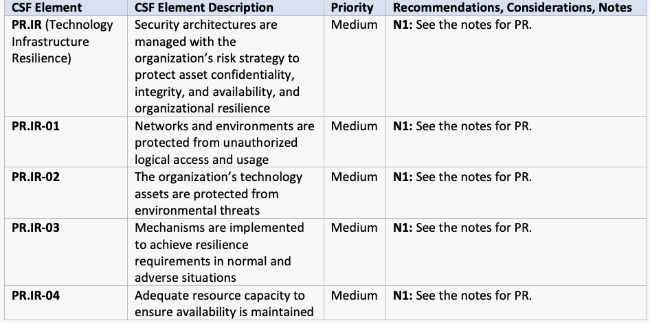
3.2. Incident Response
3.2 インシデント対応
Table 3 contains the second part of the Community Profile: Incident Response.
表3は、コミュニティプロファイルの後半「インシデント対応」を示す。
Note: All of the CSF elements in this part of the Profile are specific to responding to incidents, so they have higher priorities with respect to incident response than those in the first part. Accordingly, all CSF elements in this part have recommendations or considerations.
原本PDFの抜粋画像
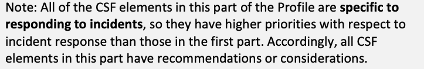
注: 本プロファイルのこの部分に含まれるCSF要素はすべてインシデント対応に特化しているため、前半の要素よりインシデント対応における優先度が高い。そのため、この部分のすべてのCSF要素に推奨事項または考慮事項がある。
Table 3. CSF 2.0 Community Profile part 2: Incident Response
表3. CSF 2.0 コミュニティプロファイル 第2部: インシデント対応
原本PDFの抜粋画像
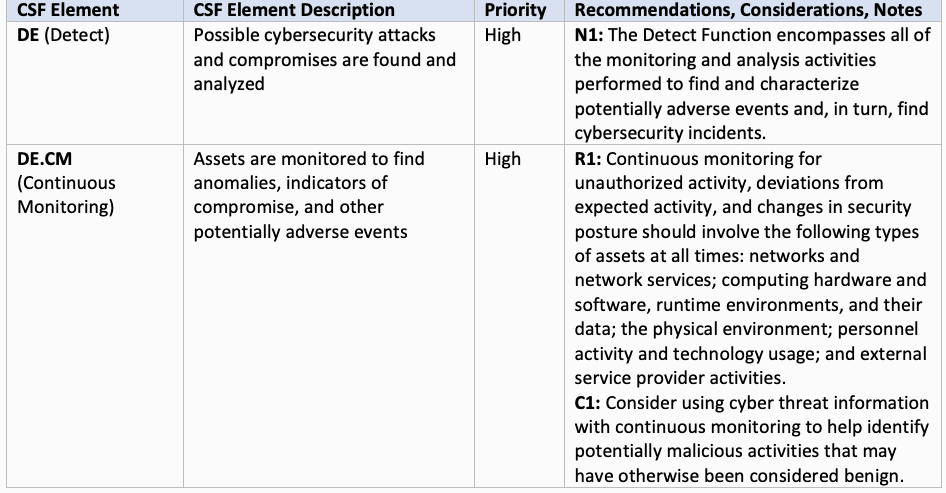
| CSF Element | CSF Element Description | Priority | Recommendations, Considerations, Notes |
| R2: Tune the continuous monitoring technologies to reduce false positives and false negatives to acceptable levels. | |||
| DE.CM-01 | Networks and network services are monitored to find potentially adverse events | High | R1: Monitoring should include wired and |
| wireless networks, network | |||
| communications and flows, network | |||
| services (e.g., DNS and BGP), and the | |||
| presence of unauthorized or rogue | |||
| networks within facilities. | |||
| DE.CM-02 | The physical environment is monitored to find potentially adverse events | High | R1: Monitoring the physical environment should include all successful and failed access attempts into all controlled areas, the movement of people and equipment into and out of secure areas of facilities, and signs of tampering with physical access controls. |
| DE.CM-03 | Personnel activity and technology usage are monitored to find potentially adverse events | High | R1: Monitoring personnel activity and |
| technology usage should include | |||
| anomalous user activity or unusual | |||
| patterns of activity, authentication and | |||
| logical access attempts, and the use of | |||
| deception technology. | |||
| DE.CM-06 | External service provider activities and services are monitored to find potentially adverse events | High | R1: Monitoring external service provider activities and services should include remote and on-site administration and maintenance activities that providers perform on organizational systems and deviations from expected behavior by cloud-based services, internet service providers, and other service providers. |
| DE.CM-09 | Computing hardware and software, runtime environments, and their data are monitored to find potentially adverse events | High | R1: Monitor email, web, file sharing, |
| collaboration services, and other common | |||
| attack vectors to detect malware, phishing, | |||
| data leaks, exfiltration, and other adverse | |||
| events. | |||
| R2: Monitor authentication attempts to | |||
| identify attacks against credentials and | |||
| unauthorized credential use. | |||
| R3: Monitor software and hardware | |||
| configurations for deviations from security | |||
| baselines. | |||
| R4: Monitor hardware and software, | |||
| including cybersecurity protection | |||
| mechanisms, for signs of tampering, failure, | |||
| or compromise. | |||
| R5: Monitor endpoints for cyber health | |||
| issues (e.g., missing patches, malware | |||
| infections, or unauthorized software), and | |||
| redirect endpoints with issues to a | |||
| remediation environment before access is | |||
| authorized. |
原本PDFの抜粋画像
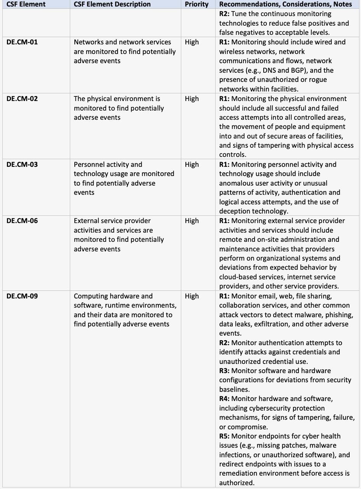
| CSF要素 | CSF要素の説明 | 優先度 | 推奨事項、考慮事項、注記 |
| R2: 継続的監視技術を調整し、誤検知と見逃しを許容できる水準まで減らす。 | |||
| DE.CM-01 | 潜在的に有害な事象を発見するため、ネットワークおよびネットワークサービスを監視する | High（高） | R1: 監視対象には、有線および |
| 無線ネットワーク、ネットワーク | |||
| 通信とデータフロー、ネットワーク | |||
| サービス（DNSやBGPなど）、および | |||
| 施設内の未認可または不正な | |||
| ネットワークを含めるべきである。 | |||
| DE.CM-02 | 潜在的に有害な事象を発見するため、物理環境を監視する | High（高） | R1: 物理環境の監視には、管理区域すべてへのアクセスの成功・失敗、施設の安全区域への人や機器の出入り、物理的アクセス制御への改ざんの兆候をすべて含めるべきである。 |
| DE.CM-03 | 潜在的に有害な事象を発見するため、職員の活動と技術の使用状況を監視する | High（高） | R1: 職員の活動と |
| 技術の使用状況の監視には、 | |||
| 異常なユーザー活動や通常とは異なる | |||
| 活動パターン、認証および | |||
| 論理アクセスの試行、さらに | |||
| 欺瞞技術の使用を含めるべきである。 | |||
| DE.CM-06 | 潜在的に有害な事象を発見するため、外部サービスプロバイダーの活動とサービスを監視する | High（高） | R1: 外部サービスプロバイダーの活動とサービスの監視には、プロバイダーが組織のシステムに対して行うリモートおよびオンサイトの管理・保守作業、クラウドサービス、インターネットサービスプロバイダー、その他のサービスプロバイダーの期待される動作からの逸脱を含めるべきである。 |
| DE.CM-09 | 潜在的に有害な事象を発見するため、コンピューティングのハードウェアとソフトウェア、実行環境およびそれらのデータを監視する | High（高） | R1: メール、Web、ファイル共有、 |
| コラボレーションサービス、その他一般的な | |||
| 攻撃経路を監視して、マルウェア、フィッシング、 | |||
| データ漏えい、持ち出し、その他の有害な | |||
| 事象を検知する。 | |||
| R2: 認証の試行を監視し、 | |||
| クレデンシャルを狙った攻撃や | |||
| 未認可のクレデンシャル使用を特定する。 | |||
| R3: ソフトウェアおよびハードウェアの | |||
| 構成がセキュリティベースラインから | |||
| 逸脱していないか監視する。 | |||
| R4: ハードウェアとソフトウェアを、 | |||
| サイバーセキュリティ保護 | |||
| メカニズムも含めて監視し、改ざん、故障、 | |||
| 侵害の兆候を確認する。 | |||
| R5: エンドポイントのサイバー衛生上の | |||
| 問題（パッチ不足、マルウェア | |||
| 感染、未認可ソフトウェアなど）を監視し、 | |||
| 問題のあるエンドポイントを | |||
| アクセス許可の前に | |||
| 修復用環境へ誘導する。 |
| CSF Element | CSF Element Description | Priority | Recommendations, Considerations, Notes |
| DE.AE (Adverse Event Analysis) | Anomalies, indicators of compromise, and other potentially adverse events are analyzed to characterize the events and detect cybersecurity incidents | High | N1: Adverse event analysis involves studying the data on potentially adverse events collected by continuous monitoring to find possible attacks and compromises and declaring when an incident has occurred so as to initiate incident response activities. R1: The volume of potentially adverse events to be analyzed is generally quite high, so organizations should rely on technical solutions that filter large event datasets down to a subset that is suitable for human viewing and analysis. N2: The fidelity of events varies based on many factors. Anomalies may have benign or malicious foundations. Some incidents are relatively easy to find amid the noise, while others require deep, specialized technical knowledge and experience. N3: CTI can be invaluable in detecting malicious activity early, reducing its impact, and shortening recovery time. Signs of an incident may be more obvious later in the attack life cycle, but the incident’s impact and scope may be much larger. R2: Organizations should strive to find incidents earlier in the attack life cycle and take a proactive approach to incident detection and response. |
| DE.AE-02 | Potentially adverse events are analyzed to better understand associated activities | High | R1: Use tools (e.g., security information |
| and event management [SIEM]; security | |||
| orchestration, automation, and response | |||
| [SOAR]) to continuously monitor log events | |||
| for known malicious and suspicious activity | |||
| and to generate reports on their findings. | |||
| R2: Utilize up-to-date CTI in log analysis | |||
| tools to improve detection accuracy and | |||
| characterize threat actors, their methods, | |||
| and indicators of compromise. | |||
| R3: Regularly conduct manual reviews of | |||
| log events for technologies that cannot be | |||
| sufficiently monitored through automation. | |||
| DE.AE-03 | Information is correlated from multiple sources | High | R1: Constantly transfer the log data generated by other sources to a relatively small number of log servers. R2: Use event correlation technology (e.g., SIEM, SOAR) to gather pieces of related data captured by multiple sources. R3: Utilize CTI to help correlate events among log sources. |
原本PDFの抜粋画像
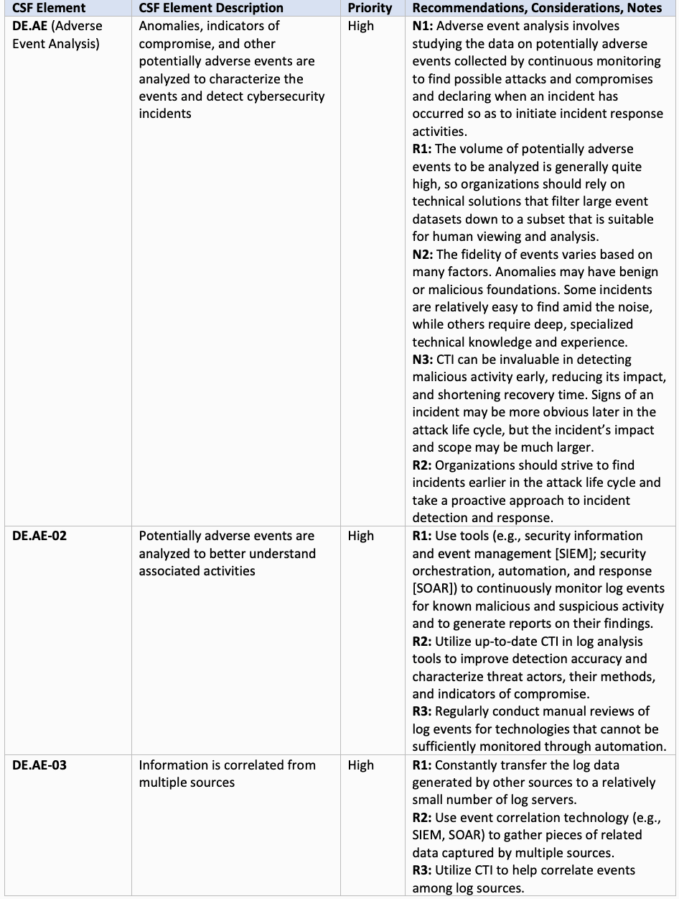
| CSF要素 | CSF要素の説明 | 優先度 | 推奨事項、考慮事項、注記 |
| DE.AE（有害事象分析） | 異常、侵害の兆候、その他の潜在的に有害な事象を分析し、事象の特徴を把握してサイバーセキュリティインシデントを検知する | High（高） | N1: 有害事象分析では、継続的監視によって収集した潜在的に有害な事象のデータを調べ、攻撃や侵害の可能性を見つけ、インシデントが発生したと判定してインシデント対応活動を開始する。R1: 分析対象となる潜在的に有害な事象は一般に非常に多い。そのため、組織は大量の事象データを、人が閲覧・分析できる量に絞り込む技術的解決策に頼るべきである。N2: 事象の確度はさまざまな要因によって異なる。異常には無害な原因も悪意ある原因もあり得る。雑多な情報の中から比較的容易に見つかるインシデントもあれば、深い専門知識や経験を必要とするものもある。N3: CTIは、悪意ある活動の早期検知、影響の軽減、復旧時間の短縮に非常に有用である。攻撃ライフサイクルの後半ではインシデントの兆候が明確になることもあるが、その時点では影響と範囲がより大きくなっている可能性がある。R2: 組織は、攻撃ライフサイクルの早期にインシデントを発見するよう努め、インシデントの検知と対応に積極的な姿勢で臨むべきである。 |
| DE.AE-02 | 関連する活動をよりよく理解するため、潜在的に有害な事象を分析する | High（高） | R1: たとえばセキュリティ情報 |
| およびイベント管理（SIEM）、セキュリティ | |||
| オーケストレーション、自動化、対応 | |||
| （SOAR）などのツールを使い、ログ事象を継続的に監視して、 | |||
| 既知の悪意ある活動や疑わしい活動を特定し、 | |||
| 分析結果を報告する。 | |||
| R2: 最新のCTIをログ分析 | |||
| ツールで活用して、検知精度を高め、 | |||
| 脅威行為者、その手法、 | |||
| 侵害の兆候を特定する。 | |||
| R3: 自動化による監視が | |||
| 十分にできない技術については、 | |||
| ログ事象を定期的に手作業で確認する。 | |||
| DE.AE-03 | 複数の情報源からの情報を相関分析する | High（高） | R1: 他の情報源が生成したログデータを、比較的少数のログサーバーへ常時転送する。R2: 事象相関技術（SIEM、SOARなど）を使って、複数の情報源で取得した関連データを集約する。R3: CTIを活用して、ログ情報源間の事象相関を支援する。 |
原本PDFの抜粋画像
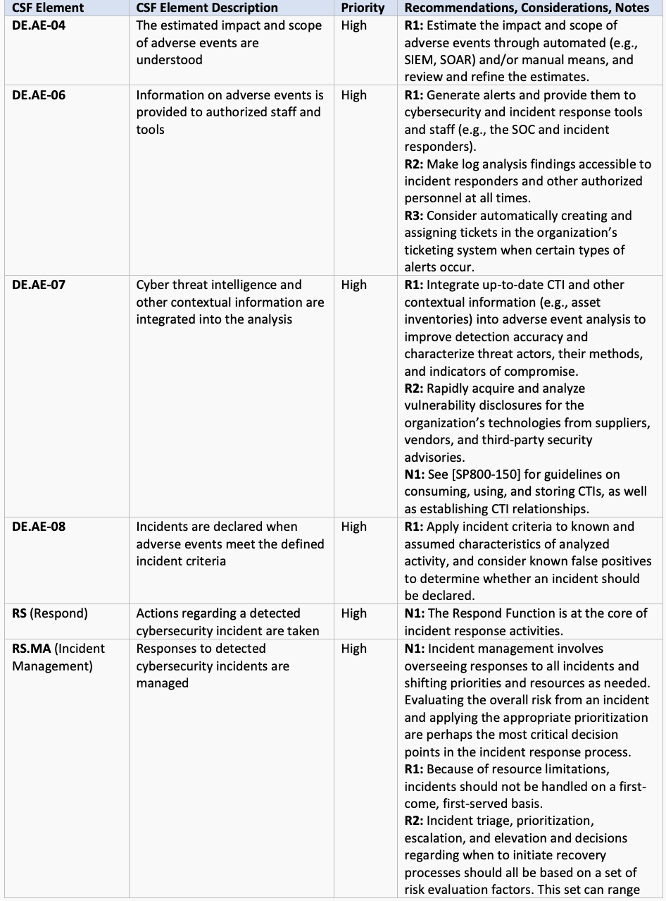
| CSF Element | CSF Element Description | Priority | Recommendations, Considerations, Notes |
| from simple to incredibly complex, depending on the needs and maturity of an organization. N2: Examples of possible risk evaluation factors include asset criticality, functional impact of the incident, data impact of the incident, stage of observed activity, threat actor characterization, and recoverability. R3: The incident response status should be tracked for each incident along with pertinent information, such as an incident summary, indicators of compromise related to the incident, the status and expected time frame for each assigned action, and next steps to be taken. | |||
| RS.MA-01 | The incident response plan is executed in coordination with relevant third parties once an incident is declared | High | R1: Detection technologies should |
| automatically report incidents that they | |||
| have confirmed. | |||
| C1: Consider designating an incident lead | |||
| for each incident. | |||
| R2: If appropriate, contact the | |||
| organization’s incident response service | |||
| provider to request assistance. | |||
| R3: Initiate execution of other | |||
| cybersecurity plans as needed (e.g., | |||
| business continuity and disaster recovery | |||
| plans) to support incident response. | |||
| RS.MA-02 | Incident reports are triaged and validated | High | R1: Perform a preliminary review of a new incident report to verify that a cybersecurity incident has occurred, then estimate the severity of the incident and the level of urgency needed to respond to it. R2: Have mechanisms in place for third parties to report possible incidents that involve the organization. Reports should be carefully monitored and taken seriously. For example, the organization might be contacted by a party claiming that its systems are being attacked by a system at the organization. External users may report other indicators, such as an unavailable service. Other incident response teams may also report incidents to the organization. |
| RS.MA-03 | Incidents are categorized and prioritized | High | R1: Perform a more detailed review of |
| incidents to help categorize them by | |||
| incident type (e.g., data breach, | |||
| ransomware, account takeover, denial of | |||
| service). |
原本PDFの抜粋画像
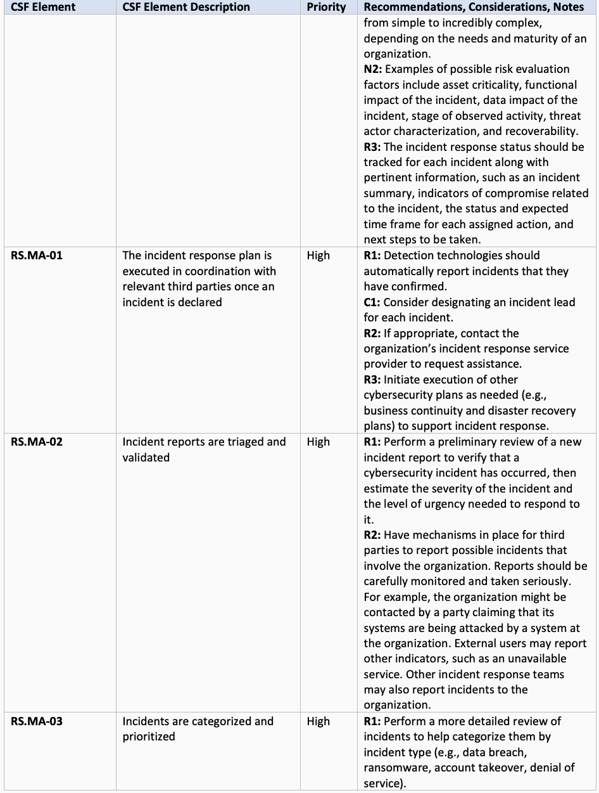
| CSF要素 | CSF要素の説明 | 優先度 | 推奨事項、考慮事項、注記 |
| 組織のニーズと成熟度に応じて、単純なものから非常に複雑なものまであり得る。N2: リスク評価要因の例として、資産の重要度、インシデントの機能面およびデータへの影響、観測された活動の段階、脅威行為者の特性、復旧可能性が挙げられる。R3: 各インシデントの対応状況を、インシデント概要、関連する侵害の兆候、割当て済み各措置の状況と予定期間、次に実施する事項などの関連情報とともに追跡すべきである。 | |||
| RS.MA-01 | インシデントを宣言した後、関連する第三者と連携してインシデント対応計画を実行する | High（高） | R1: 検知技術が確認済みのインシデントを |
| 自動的に報告すべきである。 | |||
| C1: 各インシデントにインシデント責任者を | |||
| 指定することを検討する。 | |||
| R2: 適切であれば、組織の | |||
| インシデント対応サービス | |||
| プロバイダーに支援を依頼する。 | |||
| R3: インシデント対応を支援するため、 | |||
| 必要に応じて他のサイバーセキュリティ計画（ | |||
| 事業継続計画や災害復旧計画など）を | |||
| 実行する。 | |||
| RS.MA-02 | インシデント報告をトリアージし、検証する | High（高） | R1: 新たなインシデント報告を予備的に確認し、サイバーセキュリティインシデントが発生したことを検証した上で、その深刻度と対応に必要な緊急度を推定する。R2: 組織に関係するインシデントの可能性を第三者が報告できる仕組みを設ける。報告は注意深く監視し、真剣に扱うべきである。たとえば、組織のシステムから攻撃を受けていると主張する相手から連絡が来る場合がある。外部ユーザーが、サービスを利用できないなど別の兆候を報告する場合もある。他のインシデント対応チームが組織にインシデントを報告することもある。 |
| RS.MA-03 | インシデントを分類し、優先順位付けする | High（高） | R1: インシデントをより詳細に確認し、 |
| 次のような | |||
| インシデント種別（データ侵害、 | |||
| ランサムウェア、アカウント乗っ取り、サービス | |||
| 拒否など）への分類に役立てる。 |
| CSF Element | CSF Element Description | Priority | Recommendations, Considerations, Notes |
| R2: Prioritize how quickly incident response | |||
| should be performed for each incident | |||
| based on its scope, likely impact, time- | |||
| critical nature, and resource availability. | |||
| R3: Select incident response strategies for | |||
| active incidents by balancing the need to | |||
| quickly recover from an incident with the | |||
| need to observe the attacker or conduct a | |||
| more thorough investigation. | |||
| N1: Every response strategy decision has | |||
| trade-offs. For example, a strategy that | |||
| supports observing the attacker’s behavior | |||
| or conducting a more thorough | |||
| investigation may be at odds with the need | |||
| to quickly return to normal operations. | |||
| RS.MA-04 | Incidents are escalated or elevated as needed | High | N1: Escalation generally refers to increasing resources or time frames, while elevation usually indicates involving a higher level of management in the response efforts. R1: Track and validate the status of all ongoing incidents so that incidents in need of more response resources or a change in response strategy can be identified and the necessary changes initiated rapidly. |
| RS.MA-05 | The criteria for initiating incident recovery are applied | High | R1: Apply incident recovery criteria to |
| known and assumed characteristics of the | |||
| incident to determine when an incident’s | |||
| recovery processes should be initiated. | |||
| R2: Take the possible operational | |||
| disruption of incident recovery activities | |||
| into account to determine when recovery | |||
| should be initiated. | |||
| RS.AN (Incident Analysis) | Investigations are conducted to ensure effective response and support forensics and recovery activities | High | N1: The Incident Analysis Category focuses on investigating, determining, and documenting what has happened during an incident, as well as how and why it happened. |
| RS.AN-03 | Analysis is performed to establish what has taken place during an incident and the root cause of the incident | High | R1: Determine the sequence of events that |
| have occurred during the incident and | |||
| which assets and resources were involved | |||
| in each of those events. | |||
| R2: Attempt to determine what | |||
| vulnerabilities, threats, and threat actors | |||
| were directly or indirectly involved in the | |||
| incident. | |||
| R3: Analyze the incident to find the | |||
| underlying or systemic root causes. | |||
| R4: Check any deployed cyber deception | |||
| technology for additional information on | |||
| attacker behavior. |
原本PDFの抜粋画像
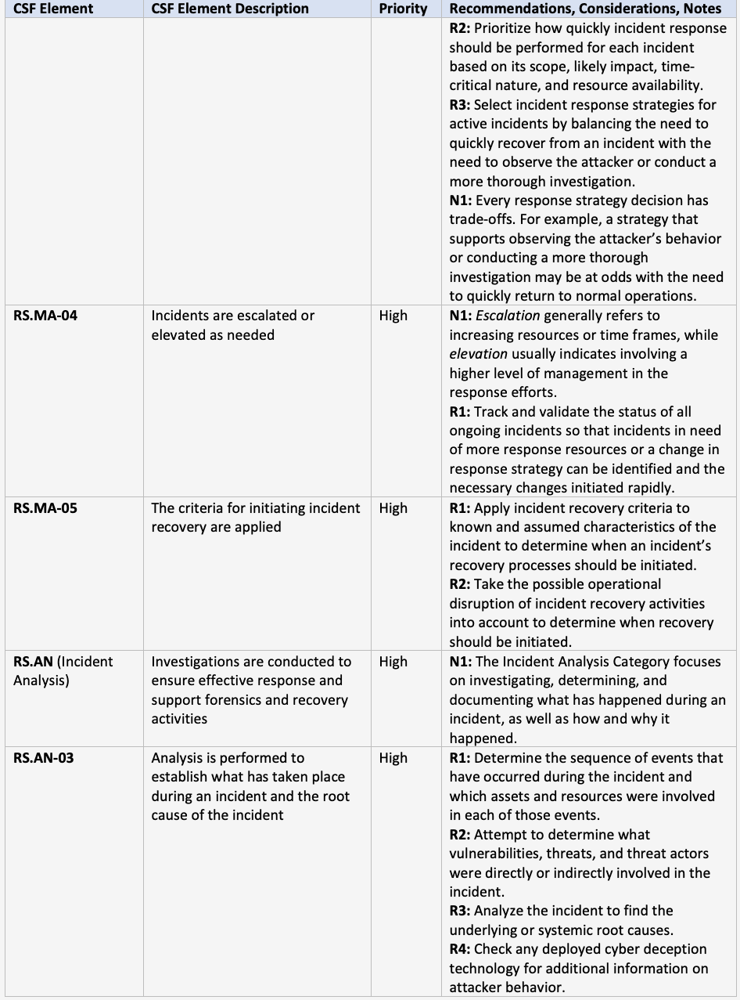
| CSF要素 | CSF要素の説明 | 優先度 | 推奨事項、考慮事項、注記 |
| R2: 各インシデントの対応速度を、 | |||
| 範囲、想定される影響、時間的な緊急性、 | |||
| 利用可能なリソースに基づいて | |||
| 優先順位付けする。 | |||
| R3: 進行中のインシデントへの対応戦略は、 | |||
| 迅速な復旧の必要性と、 | |||
| 攻撃者の観察やより詳細な調査の | |||
| 必要性とのバランスを取りながら | |||
| 選択する。 | |||
| N1: 対応戦略の決定には | |||
| 常にトレードオフが伴う。たとえば、 | |||
| 攻撃者の行動観察や詳細調査を | |||
| 優先する戦略は、 | |||
| 通常業務へ早く戻る必要性と | |||
| 相反する場合がある。 | |||
| RS.MA-04 | 必要に応じてインシデントをエスカレーションまたは上位へ引き上げる | High（高） | N1: エスカレーションは一般にリソースや期間の拡大を指し、上位への引き上げは通常、対応作業に上位レベルの管理職を関与させることを指す。R1: 進行中のすべてのインシデント状況を追跡・検証し、追加の対応リソースや戦略変更が必要なインシデントを特定して、必要な変更を迅速に開始できるようにする。 |
| RS.MA-05 | インシデント復旧を開始する基準を適用する | High（高） | R1: 既知および想定されるインシデントの |
| 特徴に復旧基準を適用し、復旧プロセスを | |||
| 開始すべき時期を | |||
| 判断する。 | |||
| R2: 復旧活動によって生じ得る | |||
| 業務中断を考慮し、復旧の | |||
| 開始時期を | |||
| 判断する。 | |||
| RS.AN（インシデント分析） | 効果的な対応を確実にし、フォレンジックおよび復旧活動を支援するために調査を実施する | High（高） | N1: インシデント分析カテゴリでは、インシデント中に何が起きたか、どのように、なぜ起きたかを調査し、判断し、記録する。 |
| RS.AN-03 | インシデント中に起きたことと根本原因を明らかにするため分析を行う | High（高） | R1: インシデント中に発生した |
| 一連の事象と、 | |||
| 各事象に関与した資産およびリソースを | |||
| 特定する。 | |||
| R2: どの脆弱性、脅威、脅威行為者が | |||
| 直接または間接的に | |||
| インシデントに関与したかを | |||
| 特定するよう努める。 | |||
| R3: インシデントを分析して | |||
| 根本的または構造的な原因を見つける。 | |||
| R4: 導入済みのサイバー欺瞞 | |||
| 技術を調べ、 | |||
| 攻撃者の行動に関する追加情報を得る。 |
| CSF Element | CSF Element Description | Priority | Recommendations, Considerations, Notes |
| N1: This information may also be helpful | |||
| for identifying weaknesses in cybersecurity | |||
| risk management that should be addressed | |||
| to prevent similar incidents from occurring | |||
| in the future. | |||
| RS.AN-06 | Actions performed during an investigation are recorded, and the records’ integrity and provenance are preserved | High | N1: Facts discovered and actions taken during incident response tasks can be recorded by many means, including a paper logbook, audio/video recordings, or automatic session monitoring and logging, as permitted by the organization’s incident response plan and policy. R1: Safeguard the confidentiality and integrity of incident response records, and ensure that only authorized personnel have access. N2: Incident response records can contain sensitive information, such as data on exploited vulnerabilities, recent data breaches, and users who may have performed inappropriate actions. The incident lead is often responsible for ensuring that incident response records are properly safeguarded. |
| RS.AN-07 | Incident data and metadata are collected, and their integrity and provenance are preserved | High | N1: Many incident responses involve the |
| collection of incident data and metadata. | |||
| Formal evidence gathering and handling | |||
| using chain-of-custody procedures might | |||
| not be performed for every incident that | |||
| occurs (e.g., most malware incidents will | |||
| not result in prosecution). However, | |||
| collected incident data is still considered | |||
| evidence, which is defined as “grounds for | |||
| belief or disbelief; data on which to base | |||
| proof or to establish truth or falsehood” | |||
| [SP800-160v1]. | |||
| R1: Collect and retain evidence from an | |||
| incident in accordance with the | |||
| organization’s evidence preservation | |||
| procedures and data retention policies, and | |||
| consider factors such as the possibility of | |||
| prosecution, and the cost of retaining the | |||
| data and the hardware and software | |||
| needed to access the data in the future. | |||
| RS.AN-08 | An incident’s magnitude is estimated and validated | High | N1: Determining the incident’s magnitude is often one of the most challenging aspects of incident response. R1: Look for indicators of compromise, evidence of persistence, and other signs of an incident on both the assets known to be targeted and other potential targets. |
原本PDFの抜粋画像
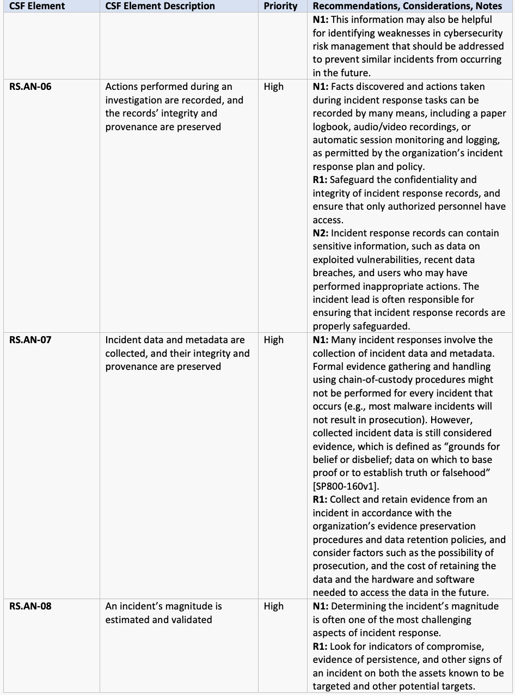
| CSF要素 | CSF要素の説明 | 優先度 | 推奨事項、考慮事項、注記 |
| N1: この情報は、 | |||
| サイバーセキュリティリスク管理における | |||
| 弱点を特定するのにも役立つ場合がある。 | |||
| その弱点は、同様のインシデントが | |||
| 将来発生するのを防ぐために対処すべきものである。 | |||
| RS.AN-06 | 調査中に実施した措置を記録し、記録の完全性と来歴を保全する | High（高） | N1: インシデント対応作業中に発見した事実や実施した措置は、組織のインシデント対応計画と方針で認められる範囲で、紙のログブック、音声・動画記録、自動的なセッション監視・記録など、さまざまな方法で記録できる。R1: インシデント対応記録の機密性と完全性を保護し、認可された職員だけがアクセスできるようにする。N2: インシデント対応記録には、悪用された脆弱性、最近のデータ侵害、不適切な行為をした可能性のあるユーザーなどの機微情報が含まれることがある。記録を適切に保護する責任は、多くの場合インシデント責任者が負う。 |
| RS.AN-07 | インシデントデータとメタデータを収集し、その完全性と来歴を保全する | High（高） | N1: 多くのインシデント対応では、 |
| インシデントデータおよびメタデータを収集する。 | |||
| 管理の連鎖（chain of custody）手順を用いた | |||
| 正式な証拠の収集・取扱いは、 | |||
| 発生するすべてのインシデントで | |||
| 実施されるとは限らない（たとえば、多くのマルウェア事案は | |||
| 訴追に至らない）。しかし、 | |||
| 収集したインシデントデータは証拠と見なされる。 | |||
| 証拠とは「信じる、または信じない根拠、 | |||
| 証明の基礎となるデータ、または真偽を | |||
| 立証するデータ」をいう。 | |||
| [SP800-160v1]。 | |||
| R1: インシデントの証拠を収集・保持する際は、 | |||
| 組織の証拠保全手順と | |||
| データ保持ポリシーに従い、 | |||
| 訴追の可能性などを考慮する。 | |||
| データを保持する費用、 | |||
| 将来そのデータにアクセスするための | |||
| ハードウェアおよびソフトウェアにかかる | |||
| 費用も考慮する。 | |||
| RS.AN-08 | インシデントの規模を推定し、検証する | High（高） | N1: インシデントの規模の判定は、インシデント対応で最も難しい作業の一つである。R1: 標的と判明している資産と、標的となり得る他の資産の両方で、侵害の兆候、永続化の証拠、その他のインシデントの兆候を探す。 |
| CSF Element | CSF Element Description | Priority | Recommendations, Considerations, Notes |
| Skipping this activity or performing it in a superficial way may cause underestimation of the incident’s magnitude, thus allowing the incident to continue indefinitely on other targets without the organization’s knowledge or monitoring. | |||
| RS.CO (Incident Response Reporting and Communication) | Response activities are coordinated with internal and external stakeholders, as required by laws, regulations, or policies | High | N1: Incident response reporting and |
| communication activities tend to fall into | |||
| four categories. Incident coordination | |||
| involves communicating current and | |||
| planned incident response activities for a | |||
| particular incident among the internal and | |||
| external parties with incident response | |||
| roles and responsibilities. Incident | |||
| notification involves formally informing | |||
| affected customers, employees, partners, | |||
| regulators, or others about a data breach | |||
| or other incident. Public communication | |||
| involves communicating to the public about | |||
| the status of a particular incident, such as | |||
| responding to media inquiries. Incident | |||
| information sharing involves sharing | |||
| cybersecurity threat information with | |||
| others, usually voluntarily, based on | |||
| activity observed within the organization’s | |||
| technology assets. | |||
| R1: Organizations should have mechanisms | |||
| in place in advance to coordinate with | |||
| affected parties about incidents when | |||
| needed. | |||
| RS.CO-02 | Internal and external stakeholders are notified of incidents | High | R1: When an incident is analyzed and prioritized, the incident response team should coordinate with the appropriate individuals inside and outside of the organization so that all who need to be involved will play their roles. R2: Follow established procedures concerning incident coordination that include what must be reported to whom and at what times (e.g., initial notification, regular status updates). R3: Perform notifications in compliance with the current incident notification- related laws and regulations that pertain to the organization’s sectors, geographic locations, customer locations, and any other characteristics that apply to the organization. Incident notification is an evolving topic, and new laws and regulations are being established frequently. |
原本PDFの抜粋画像
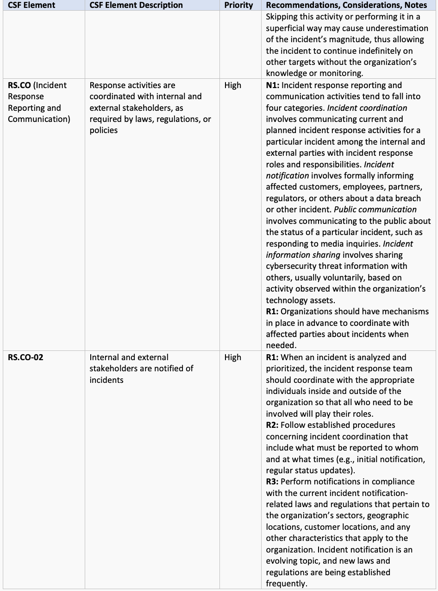
| CSF要素 | CSF要素の説明 | 優先度 | 推奨事項、考慮事項、注記 |
| この活動を省略したり表面的にしか行わなかったりすると、インシデントの規模を過小評価するおそれがあり、その結果、組織が把握も監視もしないまま、インシデントが他の標的上で無期限に継続しかねない。 | |||
| RS.CO（インシデント対応の報告およびコミュニケーション） | 法律、規制、方針が求める場合、対応活動を内部および外部の利害関係者と調整する | High（高） | N1: インシデント対応の報告と |
| コミュニケーション活動は、通常、 | |||
| 4つのカテゴリに分かれる。インシデント調整では、 | |||
| 特定のインシデントについて、現在および | |||
| 予定されているインシデント対応活動を、 | |||
| インシデント対応の役割と責任を担う | |||
| 内部および外部の関係者間で連絡する。インシデント | |||
| 通知では、影響を受けた顧客、従業員、 | |||
| パートナー、規制当局その他の者に、 | |||
| データ侵害またはその他のインシデントについて | |||
| 正式に知らせる。 | |||
| 公的コミュニケーションでは、 | |||
| 特定のインシデントの状況について | |||
| 一般に伝える。たとえば、 | |||
| メディアからの問い合わせに対応する。インシデント | |||
| 情報共有では、 | |||
| 組織の技術資産内で観測された活動に基づき、 | |||
| 通常は自発的に、 | |||
| サイバーセキュリティ脅威情報を | |||
| 他者と共有する。 | |||
| R1: 組織は、事前に、 | |||
| 必要に応じてインシデントの影響を受けた | |||
| 当事者と調整するための仕組みを | |||
| 整えておくべきである。 | |||
| RS.CO-02 | 内部および外部の利害関係者にインシデントを通知する | High（高） | R1: インシデントを分析し優先順位付けした際は、インシデント対応チームは、関与すべき全員が役割を果たせるよう、組織内外の適切な関係者と調整すべきである。R2: 誰に何をいつ報告するか（初回通知、定期的な状況報告など）を定めた、確立済みのインシデント調整手順に従う。R3: 組織の業種、地理的位置、顧客の所在地、その他組織に該当する特性に適用される、現行のインシデント通知関連法令を遵守して通知する。インシデント通知は変化し続ける分野であり、新しい法令が頻繁に制定されている。 |
| CSF Element | CSF Element Description | Priority | Recommendations, Considerations, Notes |
| R4: Notify affected third parties of data breaches and other cybersecurity incidents in accordance with regulatory, legal, and contractual requirements. R5: Notify law enforcement agencies and regulatory bodies of incidents based on criteria in the incident response plan and management approval. Designated individuals should contact these parties in a manner consistent with the requirements of the law and the organization’s policies and procedures. | |||
| RS.CO-03 | Information is shared with designated internal and external stakeholders | High | N1: Voluntary incident information sharing |
| is often mutually beneficial because the | |||
| same threats and attacks simultaneously | |||
| affect multiple organizations. An example is | |||
| sharing information about observed TTPs | |||
| with a sector-specific Information Sharing | |||
| and Analysis Center (ISAC). | |||
| N2: Sharing defensive tactics between | |||
| organizations can enhance overall | |||
| situational awareness and increase the | |||
| resiliency of all. There is a cost to threat | |||
| actors to develop or purchase exploits and | |||
| to deploy them. The effective identification | |||
| and dissemination of detection techniques | |||
| lowers the attackers’ return on investment | |||
| and increases their costs. | |||
| N3: Incident handlers might coordinate | |||
| their efforts with colleagues at partner | |||
| organizations to share tactical, technical | |||
| information on mitigating an attack that | |||
| spans those organizations. The | |||
| organizations participating in this type of | |||
| relationship are usually peers without | |||
| authority over each other. In addition to | |||
| choosing to share information, they may | |||
| also pool resources to solve common | |||
| problems. | |||
| R1: Securely share information with | |||
| stakeholders consistent with the | |||
| organization’s response plans and | |||
| information sharing agreements, including | |||
| contracts with suppliers. | |||
| R2: Regularly update senior leadership on | |||
| the status of major incidents. | |||
| R3: Notify human resources when | |||
| malicious insider activity has occurred. | |||
| R4: Establish and follow media | |||
| communications procedures for incident | |||
| response that comply with the |
原本PDFの抜粋画像
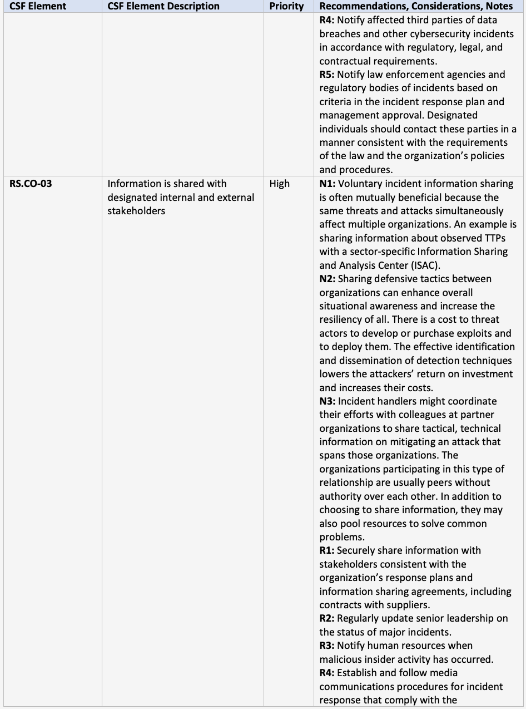
| CSF要素 | CSF要素の説明 | 優先度 | 推奨事項、考慮事項、注記 |
| R4: 法令、規制、契約上の要件に従い、データ侵害その他のサイバーセキュリティインシデントを影響を受けた第三者に通知する。R5: インシデント対応計画の基準と経営層の承認に基づき、法執行機関および規制機関にインシデントを通知する。指定された担当者は、法令ならびに組織の方針・手順の要件に沿った方法でこれらの機関に連絡すべきである。 | |||
| RS.CO-03 | 指定された内部および外部の利害関係者と情報を共有する | High（高） | N1: インシデント情報の自発的な共有は、 |
| 同じ脅威や攻撃が複数の組織に | |||
| 同時に影響を及ぼすため、 | |||
| 多くの場合、相互に有益である。たとえば、 | |||
| 観測したTTPに関する情報を | |||
| 業界別の情報共有・分析センター | |||
| （ISAC）と共有する方法がある。 | |||
| N2: 組織間で防御戦術を共有すると、 | |||
| 全体の状況認識が高まり、 | |||
| すべての組織の | |||
| レジリエンスが強化される。脅威行為者が | |||
| エクスプロイトを開発または購入し、 | |||
| 展開するにはコストがかかる。検知技術の | |||
| 効果的な特定と普及により、 | |||
| 攻撃者の投資収益率が下がり、 | |||
| 攻撃コストが増える。 | |||
| N3: インシデント対応者は、 | |||
| パートナー組織の同僚と対応を調整し、 | |||
| それらの組織にまたがる攻撃の緩和に関する | |||
| 戦術・技術情報を | |||
| 共有する場合がある。このような | |||
| 関係に参加する組織は、 | |||
| 通常、互いに権限を持たない | |||
| 対等な立場にある。情報を共有することに加えて、 | |||
| 共通の課題を解決するために | |||
| リソースを共同で出し合う | |||
| 場合もある。 | |||
| R1: 組織の対応計画および情報共有協定（ | |||
| サプライヤーとの契約を含む）に | |||
| 沿って、利害関係者と | |||
| 情報を | |||
| 安全に共有する。 | |||
| R2: 重大インシデントの状況を | |||
| 上級管理職に定期的に報告する。 | |||
| R3: 悪意ある内部関係者による活動が | |||
| 発生した場合は人事部門に通知する。 | |||
| R4: インシデント対応に関する | |||
| メディア連絡手順を確立し、遵守する。 | |||
| この手順は、 |
| CSF Element | CSF Element Description | Priority | Recommendations, Considerations, Notes |
| organization’s policies on media interaction | |||
| and information disclosure. | |||
| RS.MI (Incident Mitigation) | Activities are performed to prevent expansion of an event and mitigate its effects | High | N1: Manually selecting containment and eradication actions may be easier and faster if the organization has criteria and procedures in place. Criteria could take the incident type into account (e.g., a cloud- based services compromise or a user endpoint ransomware infection) and use some of the risk evaluation factors in RS.MA. Another factor to consider is the duration of the containment measure (e.g., an emergency workaround that must be removed within hours, a temporary workaround to be removed within two weeks, or a permanent solution). The eradication measure’s duration could be similarly evaluated. R1: In some instances, organizations redirect an attacker to a sandbox so that they can monitor the attacker’s activity, usually to gather additional evidence. This delays containment and eradication activities. The incident response team should first discuss the feasibility of this strategy with the legal department before executing it. The intentional delay can be dangerous because an attacker could escalate unauthorized access or compromise other systems. |
| RS.MI-01 | Incidents are contained | High | N1: Containment refers to preventing the |
| expansion of an incident. Containment can | |||
| prevent additional damage and avoid | |||
| overwhelming the organization’s resources. | |||
| Most incidents require some form of | |||
| containment. | |||
| C1: Consider configuring cybersecurity | |||
| technologies (e.g., antivirus software) and | |||
| the cybersecurity features of other | |||
| technologies (e.g., operating systems, | |||
| network infrastructure devices) to | |||
| automatically perform some containment | |||
| actions, like quarantining malware, | |||
| transferring a compromised endpoint to an | |||
| isolated remediation network, or halting | |||
| the execution of an infected container. | |||
| C2: Consider authorizing third parties (e.g., | |||
| the organization’s internet service | |||
| providers and cloud service providers) to | |||
| automatically act to contain certain types |
原本PDFの抜粋画像
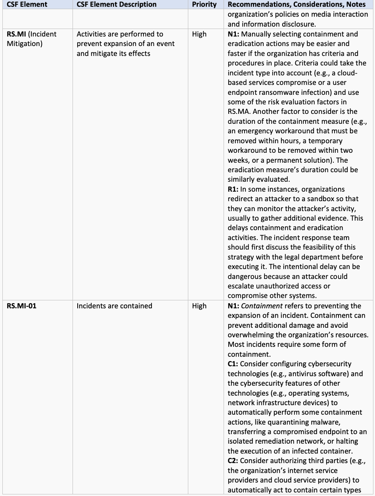
| CSF要素 | CSF要素の説明 | 優先度 | 推奨事項、考慮事項、注記 |
| 組織のメディア対応と | |||
| 情報開示に関する方針に準拠させる。 | |||
| RS.MI（インシデント緩和） | 事象の拡大を防ぎ、その影響を緩和する活動を実施する | High（高） | N1: 組織に基準と手順があれば、封じ込めや根絶の措置を手作業で選ぶ方が容易で迅速なことがある。基準では、インシデントの種類（クラウドサービスの侵害、ユーザー端末のランサムウェア感染など）を考慮し、RS.MAのリスク評価要因を利用できる。封じ込め措置の期間も考慮する（数時間以内に解除する緊急回避策、2週間以内に解除する一時的回避策、恒久的解決策など）。根絶措置についても同様に期間を評価する。R1: 組織によっては、追加の証拠を得るために攻撃者をサンドボックスへ誘導し、その活動を監視する場合がある。この方法は封じ込めと根絶を遅らせる。実施前に、インシデント対応チームはまず法務部門とこの戦略の実行可能性を検討すべきである。意図的な遅延は危険を伴う。攻撃者が未認可アクセスを拡大したり、他のシステムを侵害したりするおそれがある。 |
| RS.MI-01 | インシデントを封じ込める | High（高） | N1: 封じ込めとは、インシデントの |
| 拡大を防ぐことをいう。封じ込めにより | |||
| 追加の損害を防ぎ、 | |||
| 組織のリソースが圧迫されるのを避けられる。 | |||
| ほとんどのインシデントでは、何らかの | |||
| 封じ込めが必要となる。 | |||
| C1: サイバーセキュリティ技術（ | |||
| ウイルス対策ソフトウェアなど）や | |||
| 他の技術に備わるセキュリティ機能（ | |||
| OS、 | |||
| ネットワーク機器など）を設定し、 | |||
| 封じ込め措置の一部を自動的に | |||
| 実行することを検討する。例として、マルウェアの隔離、 | |||
| 侵害されたエンドポイントを | |||
| 隔離された修復ネットワークへ移すこと、 | |||
| 感染したコンテナの実行停止がある。 | |||
| C2: 第三者（ | |||
| 組織のインターネットサービス | |||
| プロバイダーやクラウドサービスプロバイダーなど）に、 | |||
| 特定の種類の |
| CSF Element | CSF Element Description | Priority | Recommendations, Considerations, Notes |
| of incidents (e.g., large-scale DDoS attacks) | |||
| on behalf of the organization. | |||
| R1: Allow incident handlers to manually | |||
| select and perform containment actions | |||
| instead of or in addition to automated | |||
| containment measures. | |||
| RS.MI-02 | Incidents are eradicated | High | N1: Eradication refers to mitigating an incident’s effects. After containment, eradication may be necessary to eliminate persistence mechanisms and entry points, such as deleting malware, disabling breached user accounts, and identifying and mitigating all exploited vulnerabilities. R1: Identify all affected hosts and services within the organization so that all flaws and weaknesses can be remediated. C1: Consider configuring cybersecurity technologies and the cybersecurity features of other technologies (e.g., operating systems, network infrastructure devices) to automatically perform some eradication actions. C2: Consider authorizing third parties (e.g., the organization’s internet service providers and cloud service providers) to automatically act to eradicate certain types of incidents on behalf of the organization. R2: Allow incident handlers to manually select and perform eradication actions instead of or in addition to automated eradication measures. |
| RC (Recover) | Assets and operations affected by a cybersecurity incident are restored | High | N1: During incident recovery, personnel |
| restore systems to normal operations, | |||
| confirm that the systems are functioning | |||
| normally, and (if applicable) remediate | |||
| vulnerabilities to prevent similar incidents. | |||
| N2: Recovery operations include restoring | |||
| systems from clean backups, rebuilding | |||
| systems, replacing compromised files with | |||
| clean versions, installing patches, changing | |||
| passwords, and tightening security | |||
| controls. In intrusions where the threat | |||
| actor is highly sophisticated and the full | |||
| scope of their tactics is not revealed, it may | |||
| be necessary to go as far as replacing the | |||
| hardware (e.g., bare metal) of all of the | |||
| compromised systems. | |||
| N3: For more information on incident | |||
| recovery, see [SP800-184]. |
原本PDFの抜粋画像
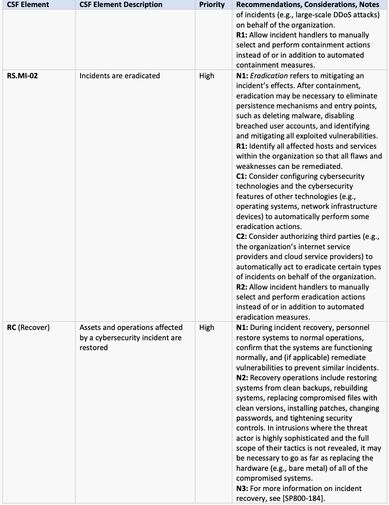
| CSF要素 | CSF要素の説明 | 優先度 | 推奨事項、考慮事項、注記 |
| インシデント（大規模なDDoS攻撃など）を、 | |||
| 組織に代わって、 | |||
| R1: インシデント対応者が、自動封じ込め措置の | |||
| 代わりに、またはそれに加えて、 | |||
| 封じ込め措置を手作業で | |||
| 選択し実施できるようにする。 | |||
| RS.MI-02 | インシデントを根絶する | High（高） | N1: 根絶とは、インシデントの影響を緩和することをいう。封じ込めの後、マルウェアの削除、侵害されたユーザーアカウントの無効化、悪用されたすべての脆弱性の特定と緩和などにより、永続化の仕組みや侵入経路を排除する必要が生じる場合がある。R1: 組織内の影響を受けたホストとサービスをすべて特定し、欠陥や弱点をすべて修正できるようにする。C1: サイバーセキュリティ技術および他の技術（OS、ネットワーク機器など）のセキュリティ機能を設定し、一部の根絶措置を自動実行することを検討する。C2: 組織のインターネットサービスプロバイダーやクラウドサービスプロバイダーなどの第三者に、特定の種類のインシデントを組織に代わって自動的に根絶する権限を与えることを検討する。R2: インシデント対応者が根絶措置を、自動措置の代わりに、またはそれに加えて、手作業で選択・実施できるようにする。 |
| RC（復旧） | サイバーセキュリティインシデントの影響を受けた資産と業務を復旧する | High（高） | N1: インシデント復旧中、職員は |
| システムを通常運用に戻し、 | |||
| 正常に動作していることを確認し、 | |||
| 該当する場合は脆弱性を修正して | |||
| 同様のインシデントを防ぐ。 | |||
| N2: 復旧作業には、 | |||
| クリーンなバックアップからの復元、 | |||
| システムの再構築、侵害されたファイルを | |||
| クリーンな版に置き換えること、パッチ適用、 | |||
| パスワード変更、セキュリティ | |||
| 管理策の強化が含まれる。 | |||
| 脅威行為者が極めて高度で、 | |||
| その戦術の全容が明らかになっていない侵入では、 | |||
| 侵害されたすべてのシステムの | |||
| ハードウェア（ベアメタルなど）の | |||
| 交換にまで及ぶ必要がある場合もある。 | |||
| N3: インシデント復旧の詳細は | |||
| [SP800-184]を参照。 |
| CSF Element | CSF Element Description | Priority | Recommendations, Considerations, Notes |
| RC.RP (Incident Recovery Plan Execution) | Restoration activities are performed to ensure operational availability of systems and services affected by cybersecurity incidents | High | N1: Executing the incident recovery plan involves selecting, prioritizing, and performing recovery actions in a secure manner; verifying the integrity of recovered assets; declaring the end of incident recovery; and completing incident documentation. N2: For more information on incident recovery plans and plan execution, see [SP800-184]. |
| RC.RP-01 | The recovery portion of the incident response plan is executed once initiated from the incident response process | High | R1: Begin recovery procedures during or |
| after incident response processes. | |||
| R2: Inform all individuals with recovery | |||
| responsibilities about the plans for | |||
| recovery and the authorizations required to | |||
| implement each aspect of the plans. | |||
| RC.RP-02 | Recovery actions are selected, scoped, prioritized, and performed | High | R1: Recovery actions should take timeliness, precision, and reliability (e.g., restoring only the affected files versus restoring all files) into account. R2: Select recovery actions based on the criteria defined in the incident response plan and available resources. R3: Change planned recovery actions based on a reassessment of organizational needs and resources. |
| RC.RP-03 | The integrity of backups and | High | R1: Check restoration assets for indicators of compromise, file corruption, and other integrity issues before use. |
| other restoration assets is | |||
| verified before using them for | |||
| restoration | |||
| RC.RP-04 | Critical mission functions and cybersecurity risk management are considered to establish post- incident operational norms | High | R1: Validate that essential services are restored in the appropriate order. R2: Work with system owners to confirm the successful restoration of systems and the return to normal operations. R3: Monitor the performance of restored systems to verify the adequacy of the restoration. |
| RC.RP-05 | The integrity of restored assets is verified, systems and services are restored, and normal operating status is confirmed | High | R1: Check restored assets for indicators of |
| compromise, and remediate the root | |||
| causes of the incident before production | |||
| use. | |||
| R2: Verify the correctness and adequacy of | |||
| the restoration actions taken before | |||
| putting a restored system online. | |||
| RC.RP-06 | The end of incident recovery is declared based on criteria, and incident-related documentation is completed | High | R1: Prepare an after-action report that documents the incident itself, the response and recovery actions taken, and lessons learned. |
原本PDFの抜粋画像
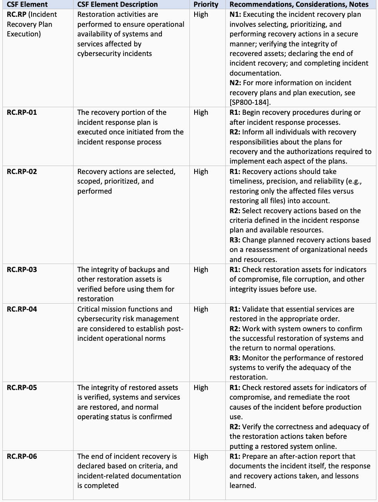
| CSF要素 | CSF要素の説明 | 優先度 | 推奨事項、考慮事項、注記 |
| RC.RP（インシデント復旧計画の実行） | サイバーセキュリティインシデントの影響を受けたシステムとサービスの運用上の可用性を確保するため、復旧活動を実施する | High（高） | N1: インシデント復旧計画の実行には、復旧措置の安全な選択、優先順位付け、実施、復旧した資産の完全性検証、インシデント復旧の終了宣言、インシデント文書の完成が含まれる。N2: インシデント復旧計画およびその実行の詳細は[SP800-184]を参照。 |
| RC.RP-01 | インシデント対応プロセスから開始された後、インシデント対応計画の復旧部分を実行する | High（高） | R1: インシデント対応プロセス中または |
| 終了後に復旧手順を開始する。 | |||
| R2: 復旧責任を担うすべての人に、 | |||
| 復旧計画と | |||
| 計画の各部分を実施するために必要な | |||
| 認可について知らせる。 | |||
| RC.RP-02 | 復旧措置を選択し、範囲を定め、優先順位付けし、実施する | High（高） | R1: 復旧措置では、適時性、正確性、信頼性（影響を受けたファイルのみを復元するか、すべてのファイルを復元するかなど）を考慮すべきである。R2: インシデント対応計画で定義した基準と利用可能なリソースに基づき復旧措置を選ぶ。R3: 組織のニーズとリソースを再評価し、計画済みの復旧措置を変更する。 |
| RC.RP-03 | バックアップおよび | High（高） | R1: 復旧に使う資産について、使用前に侵害の兆候、ファイル破損、その他完全性の問題を確認する。 |
| その他の復旧資産の完全性を | |||
| 使用前に | |||
| 検証する。 | |||
| RC.RP-04 | 事後の運用基準を確立するため、重要なミッション機能とサイバーセキュリティリスク管理を考慮する | High（高） | R1: 必須サービスが適切な順序で復旧したことを確認する。R2: システム所有者と協力し、システムの復旧が成功し、通常運用に戻ったことを確認する。R3: 復旧したシステムの性能を監視し、復旧が十分であることを検証する。 |
| RC.RP-05 | 復旧した資産の完全性を検証し、システムとサービスを復旧して、通常の運用状態を確認する | High（高） | R1: 復旧した資産に侵害の兆候がないか確認し、 |
| インシデントの根本原因を修正してから | |||
| 本番環境で | |||
| 使用する。 | |||
| R2: 復旧措置の | |||
| 正確性と十分性を確認してから | |||
| 復旧したシステムをオンラインにする。 | |||
| RC.RP-06 | 基準に基づいてインシデント復旧の終了を宣言し、インシデント関連文書を完成させる | High（高） | R1: インシデントそのもの、実施した対応・復旧措置、教訓を記録した事後報告書を作成する。 |
原本PDFの抜粋画像
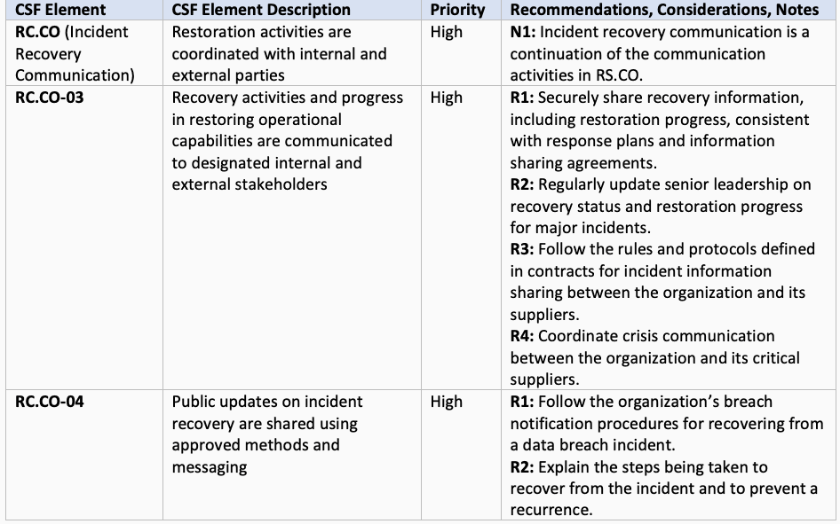
References
参考文献
[CISA-PB] Cybersecurity and Infrastructure Security Agency (2021) Cybersecurity Incident & Vulnerability Response Playbooks: Operational Procedures for Planning and Conducting Cybersecurity Incident and Vulnerability Response Activities in FCEB Information Systems. (Cybersecurity and Infrastructure Security Agency, Arlington, VA). Available at https://www.cisa.gov/sites/default/files/publications/Federal_Government_Cybersecurity_Incident_and_Vulnerability_Response_Playbooks_508C.pdf
[CISA-PB] Cybersecurity and Infrastructure Security Agency (2021) サイバーセキュリティインシデント および脆弱性対応の手引書: FCEB情報システムにおけるサイバーセキュリティインシデントおよび脆弱性対応活動の計画・実施に関する運用手順。(Cybersecurity and Infrastructure Security Agency, Arlington, VA). 入手先: https://www.cisa.gov/sites/default/files/publications/Federal_Government_Cybersecurity_Incident_and_Vulnerability_Response_Playbooks_508C.pdf
[CNSSI-4009] Committee on National Security Systems (2022) Committee on National Security Systems (CNSS) Glossary. (National Security Agency, Ft. Meade, MD). Committee on National Security Systems Instruction (CNSSI) 4009. Available at https://www.cnss.gov/CNSS/issuances/instructions.cfm
[CNSSI-4009] Committee on National Security Systems (2022) Committee on National Security Systems (CNSS) Glossary. (National Security Agency, Ft. Meade, MD). Committee on National Security Systems Instruction (CNSSI) 4009. 入手先：https://www.cnss.gov/CNSS/issuances/instructions.cfm
[CSF2.0]
[CSF2.0]
National Institute of Standards and Technology (2024) The NIST Cybersecurity Framework (CSF) 2.0. (National Institute of Standards and Technology, Gaithersburg, MD), NIST Cybersecurity White Paper (CSWP) NIST CSWP 29. https://doi.org/10.6028/NIST.CSWP.29
National Institute of Standards and Technology (2024) NISTサイバーセキュリティフレームワーク（CSF）2.0。(National Institute of Standards and Technology, Gaithersburg, MD), NIST Cybersecurity White Paper (CSWP) NIST CSWP 29. https://doi.org/10.6028/NIST.CSWP.29
[CSWP32] Pascoe C, Snyder JN, Scarfone K (2024) NIST Cybersecurity Framework 2.0: A Guide to Creating Community Profiles. (National Institute of Standards and Technology, Gaithersburg, MD), NIST Cybersecurity White Paper (CSWP) NIST CSWP 32. https://doi.org/10.6028/NIST.CSWP.32.ipd
[CSWP32] Pascoe C, Snyder JN, Scarfone K (2024) NIST Cybersecurity Framework 2.0: A Guide to Creating Community Profiles. (National Institute of Standards and Technology, Gaithersburg, MD), NIST Cybersecurity White Paper (CSWP) NIST CSWP 32. https://doi.org/10.6028/NIST.CSWP.32.ipd
[FISMA2014] Federal Information Security Modernization Act of 2014, Pub. L. 113-283, 128 Stat. 3073. Available at https://www.govinfo.gov/app/details/PLAW-113publ283
[FISMA2014] 2014年連邦情報セキュリティ近代化法, Pub. L. 113-283, 128 Stat. 3073. 入手先: https://www.govinfo.gov/app/details/PLAW-113publ283
[IR8286] Stine KM, Quinn SD, Witte GA, Gardner RK (2020) Integrating Cybersecurity and Enterprise Risk Management (ERM). (National Institute of Standards and Technology, Gaithersburg, MD), NIST Interagency or Internal Report (IR) NIST IR 8286. https://doi.org/10.6028/NIST.IR.8286
[IR8286] Stine KM, Quinn SD, Witte GA, Gardner RK (2020) Integrating Cybersecurity and Enterprise Risk Management (ERM). (National Institute of Standards and Technology, Gaithersburg, MD), NIST Interagency or Internal Report (IR) NIST IR 8286. https://doi.org/10.6028/NIST.IR.8286
[SP800-30r1] Joint Task Force Transformation Initiative (2012) Guide for Conducting Risk Assessments. (National Institute of Standards and Technology, Gaithersburg, MD), NIST Special Publication (SP) NIST SP 800-30r1. https://doi.org/10.6028/NIST.SP.800-30r1
[SP800-30r1] Joint Task Force Transformation Initiative (2012) Guide for Conducting Risk Assessments. (National Institute of Standards and Technology, Gaithersburg, MD), NIST Special Publication (SP) NIST SP 800-30r1. https://doi.org/10.6028/NIST.SP.800-30r1
[SP800-37r2] Joint Task Force (2018) Risk Management Framework for Information Systems and Organizations: A System Life Cycle Approach for Security and Privacy. (National Institute of Standards and Technology, Gaithersburg, MD), NIST Special Publication (SP) NIST SP 800-37r2. https://doi.org/10.6028/NIST.SP.800-37r2
[SP800-37r2] Joint Task Force (2018) Risk Management Framework for Information Systems and Organizations: A System Life Cycle Approach for Security and Privacy. (National Institute of Standards and Technology, Gaithersburg, MD), NIST Special Publication (SP) NIST SP 800-37r2. https://doi.org/10.6028/NIST.SP.800-37r2
[SP800-61r2] Cichonski PR, Millar T, Grance T, Scarfone KA (2012) Computer Security Incident Handling Guide. (National Institute of Standards and Technology, Gaithersburg, MD), NIST Special Publication (SP) NIST SP 800-61r2. https://doi.org/10.6028/NIST.SP.800-61r2
[SP800-61r2] Cichonski PR, Millar T, Grance T, Scarfone KA (2012) Computer Security Incident Handling Guide. (National Institute of Standards and Technology, Gaithersburg, MD), NIST Special Publication (SP) NIST SP 800-61r2. https://doi.org/10.6028/NIST.SP.800-61r2
[SP800-84] Grance T, Nolan T, Burke K, Dudley R, White G, Good T (2006) Guide to Test, Training, and Exercise Programs for IT Plans and Capabilities. (National Institute of Standards and Technology, Gaithersburg, MD), NIST Special Publication (SP) NIST SP 800-84. https://doi.org/10.6028/NIST.SP.800-84
[SP800-84] Grance T, Nolan T, Burke K, Dudley R, White G, Good T (2006) Guide to Test, Training, and Exercise Programs for IT Plans and Capabilities. (National Institute of Standards and Technology, Gaithersburg, MD), NIST Special Publication (SP) NIST SP 800-84. https://doi.org/10.6028/NIST.SP.800-84
[SP800-92r1] Scarfone K, Souppaya M (2023) Cybersecurity Log Management Planning Guide. (National Institute of Standards and Technology, Gaithersburg, MD), NIST Special Publication (SP) NIST SP 800-92r1 ipd. https://doi.org/10.6028/NIST.SP.800-92r1.ipd
[SP800-92r1] Scarfone K, Souppaya M (2023) Cybersecurity Log Management Planning Guide. (National Institute of Standards and Technology, Gaithersburg, MD), NIST Special Publication (SP) NIST SP 800-92r1 ipd. https://doi.org/10.6028/NIST.SP.800-92r1.ipd
[SP800-150] Johnson CS, Waltermire DA, Badger ML, Skorupka C, Snyder J (2016) Guide to Cyber Threat Information Sharing. (National Institute of Standards and Technology, Gaithersburg, MD), NIST Special Publication (SP) NIST SP 800-150. https://doi.org/10.6028/NIST.SP.800-150
[SP800-150] Johnson CS, Waltermire DA, Badger ML, Skorupka C, Snyder J (2016) Guide to Cyber Threat Information Sharing. (National Institute of Standards and Technology, Gaithersburg, MD), NIST Special Publication (SP) NIST SP 800-150. https://doi.org/10.6028/NIST.SP.800-150
[SP800-160v1] Ross RS, McEvilley M, Winstead M (2022) Engineering Trustworthy Secure Systems. (National Institute of Standards and Technology, Gaithersburg, MD), NIST Special Publication (SP) NIST SP 800-160v1r1. https://doi.org/10.6028/NIST.SP.800-160v1r1
[SP800-160v1] Ross RS, McEvilley M, Winstead M (2022) Engineering Trustworthy Secure Systems. (National Institute of Standards and Technology, Gaithersburg, MD), NIST Special Publication (SP) NIST SP 800-160v1r1. https://doi.org/10.6028/NIST.SP.800-160v1r1
[SP800-184] Bartock MJ, Scarfone KA, Smith MC, Witte GA, Cichonski JA, Souppaya MP (2016) Guide for Cybersecurity Event Recovery. (National Institute of Standards and Technology, Gaithersburg, MD), NIST Special Publication (SP) NIST SP 800-184. https://doi.org/10.6028/NIST.SP.800-184
[SP800-184] Bartock MJ, Scarfone KA, Smith MC, Witte GA, Cichonski JA, Souppaya MP (2016) サイバーセキュリティ事象復旧ガイド。(National Institute of Standards and Technology, Gaithersburg, MD), NIST Special Publication (SP) NIST SP 800-184. https://doi.org/10.6028/NIST.SP.800-184
[SP800-216] Schaffer KB, Mell PM, Trinh H, Van Wyk I (2023) Recommendations for Federal Vulnerability Disclosure Guidelines. (National Institute of Standards and Technology, Gaithersburg, MD), NIST Special Publication (SP) NIST SP 800-216. https://doi.org/10.6028/NIST.SP.800-216
[SP800-216] Schaffer KB, Mell PM, Trinh H, Van Wyk I (2023) Recommendations for Federal Vulnerability Disclosure Guidelines. (National Institute of Standards and Technology, Gaithersburg, MD), NIST Special Publication (SP) NIST SP 800-216. https://doi.org/10.6028/NIST.SP.800-216
[SP800-218] Souppaya MP, Scarfone KA, Dodson DF (2022) Secure Software Development Framework (SSDF) Version 1.1: Recommendations for Mitigating the Risk of Software Vulnerabilities. (National Institute of Standards and Technology, Gaithersburg, MD), NIST Special Publication (SP) NIST SP 800-218. https://doi.org/10.6028/NIST.SP.800-218
[SP800-218] Souppaya MP, Scarfone KA, Dodson DF (2022) Secure Software Development Framework (SSDF) Version 1.1: Recommendations for Mitigating the Risk of Software Vulnerabilities. (National Institute of Standards and Technology, Gaithersburg, MD), NIST Special Publication (SP) NIST SP 800-218. https://doi.org/10.6028/NIST.SP.800-218
Appendix A. List of Symbols, Abbreviations, and Acronyms
付録A 記号、略語、頭字語の一覧
CISA Cybersecurity and Infrastructure Security Agency
CISA サイバーセキュリティ・インフラセキュリティ庁
CPRT Cybersecurity and Privacy Reference Tool
CPRT サイバーセキュリティ・プライバシー参照ツール
CSF Cybersecurity Framework
CSF サイバーセキュリティフレームワーク
CSP Cloud Service Provider
CSP クラウドサービスプロバイダー
CTI Cyber Threat Intelligence
CTI サイバー脅威インテリジェンス
ISAC Information Sharing and Analysis Center
ISAC 情報共有・分析センター
ISP Internet Service Provider
ISP インターネットサービスプロバイダー
MOU Memorandum of Understanding
MOU 覚書
MSSP Managed Security Services Provider
MSSP マネージドセキュリティサービスプロバイダー
NDA Non-Disclosure Agreement
NDA 秘密保持契約
SIEM Security Information and Event Management
SIEM セキュリティ情報・イベント管理
SOAR Security Orchestration, Automation, and Response
SOAR セキュリティオーケストレーション、自動化、対応
SOC Security Operations Center
SOC セキュリティオペレーションセンター
SOP Standard Operating Procedures
SOP 標準運用手順
TTPs Tactics, Techniques, and Procedures
TTPs 戦術、技法、手順
Appendix B. Glossary
付録B 用語集
adverse cybersecurity event Any event with a potentially negative impact on cybersecurity.
サイバーセキュリティ有害事象 サイバーセキュリティに悪影響を及ぼす可能性のある事象。
computer security incident See cybersecurity incident.
コンピュータセキュリティインシデント サイバーセキュリティインシデントを参照。
cyber threat intelligence Cyber threat information that has been aggregated, transformed, analyzed, interpreted, or enriched to provide the necessary context for decision-making processes. [SP800-150, adapted]
サイバー脅威インテリジェンス 意思決定に必要な文脈を提供するために集約、変換、分析、解釈または拡充されたサイバー脅威情報。[SP800-150を改変]
cybersecurity incident An occurrence that actually or imminently jeopardizes, without lawful authority, the integrity, confidentiality, or availability of information or an information system; or constitutes a violation or imminent threat of violation of law, security policies, security procedures, or acceptable use policies. [FISMA2014]
サイバーセキュリティインシデント 適法な権限なしに、情報または情報システムの完全性、機密性、可用性を実際に、または差し迫って脅かす事象。または、法律、セキュリティ方針、セキュリティ手順、許容利用方針への違反もしくはその差し迫った脅威を構成する事象。[FISMA2014]
event Any observable occurrence involving computing assets, including physical and virtual platforms, networks, services, and cloud environments.
事象 物理・仮想プラットフォーム、ネットワーク、サービス、クラウド環境など、コンピューティング資産に関わる観測可能な発生事象。
incident See cybersecurity incident.
インシデント サイバーセキュリティインシデントを参照。
incident response The remediation or mitigation of violations of security policies and recommended practices. [FISMA2014]
インシデント対応 セキュリティ方針および推奨される実践への違反を是正または緩和すること。[FISMA2014]
indicators of compromise Technical artifacts or observables that suggest that an attack is imminent or is currently underway or that a compromise may have already occurred. [SP800-150, adapted]
侵害の兆候 攻撃が差し迫っている、進行中である、またはすでに侵害が発生した可能性を示す技術的な痕跡または観測可能な兆候。[SP800-150を改変]
tactics, techniques, and procedures The behavior of an actor. A tactic is the highest-level description of this behavior, while techniques give a more detailed description of behavior in the context of a tactic, and procedures an even lower-level, highly detailed description in the context of a technique. [SP800-150]
戦術、技法、手順 行為主体の振る舞い。戦術はその振る舞いを最も高いレベルで記述する。技法は戦術の文脈における振る舞いをより詳しく記述し、手順は技法の文脈における振る舞いをさらに低いレベルで詳細に記述する。[SP800-150]
threat Any circumstance or event with the potential to adversely impact organizational operations (including mission, functions, image, or reputation), organizational assets, individuals, other organizations, or the Nation through an information system via unauthorized access, destruction, disclosure, or modification of information, and/or denial of service. [SP800-30r1]
脅威 情報システムを介した情報への未認可アクセス、破壊、開示、改変、および／またはサービス拒否により、組織の運用（ミッション、機能、イメージ、評判を含む）、組織資産、個人、他の組織、または国家に悪影響を及ぼす可能性のある状況または事象。[SP800-30r1]
vulnerability A weakness in a system, system security procedures, internal controls, or implementation by which an actor or event may intentionally exploit or accidentally trigger the weakness to access, modify, or disrupt the normal operations of a system, resulting in a security incident or violation of the system’s security policy. [CNSSI-4009, adapted]
脆弱性 システム、システムセキュリティ手順、内部統制、または実装上の弱点。行為主体や事象がその弱点を意図的に悪用するか、偶発的に引き起こすことで、システムの通常運用にアクセス、改変、妨害し、セキュリティインシデントまたはシステムセキュリティ方針違反を生じさせる可能性がある。[CNSSI-4009を改変]
Appendix C. Change Log
付録C 改訂履歴
This publication revises the previous version, NIST SP 800-61 Revision 2 (2012), as follows:
本書は、以前の版であるNIST SP 800-61 Revision 2（2012年）を次のとおり改訂したものである。
•Performed a full rewrite of the previous content to improve clarity and usability and to remove outdated material and material addressed in more depth in other NIST publications and other federal agency content
•明確さと使いやすさを高め、古くなった内容や他のNIST刊行物・連邦機関の資料でより詳しく扱われている内容を除くため、旧版の内容を全面的に書き直した。
•Shifted the focus of the document from guidelines on detecting, analyzing, prioritizing, and handling incidents to recommendations and considerations for incorporating cybersecurity incident response considerations throughout an organization’s cybersecurity risk management activities
•文書の焦点を、インシデントの検知、分析、優先順位付け、処理に関する指針から、組織のサイバーセキュリティリスク管理活動全体にインシデント対応の考慮事項を組み込むための推奨事項と考慮事項へ移した。
•Reorganized the contents to comprise a CSF 2.0 Community Profile
•内容を再編し、CSF 2.0コミュニティプロファイルとして構成した。
•Moved most hyperlinks to a new SP 800-61 project website to facilitate their maintenance
•リンクの保守を容易にするため、大部分のハイパーリンクを新しいSP 800-61プロジェクトウェブサイトへ移した。
•Reformatted all content to follow the latest NIST technical report template
•すべての内容を、最新のNIST技術報告書テンプレートに沿う形式に改めた。
「Check for updates」と表示された更新確認アイコン。
NISTロゴとNational Institute of Standards and TechnologyおよびU.S. Department of Commerceの名称。